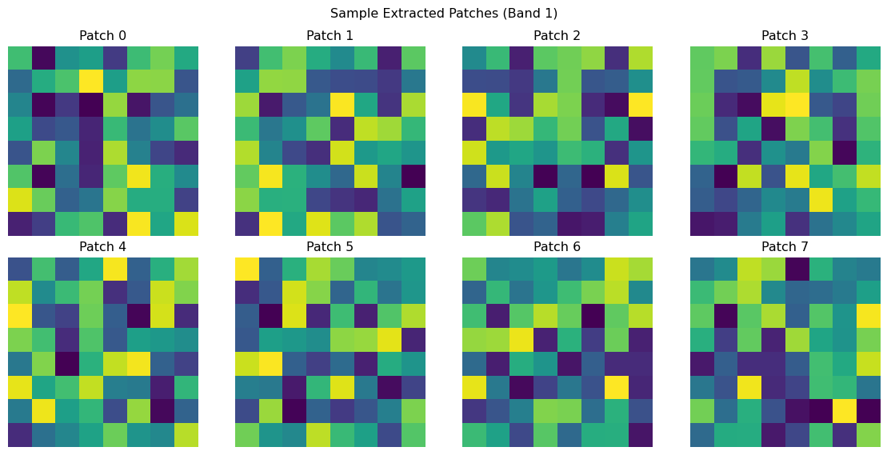
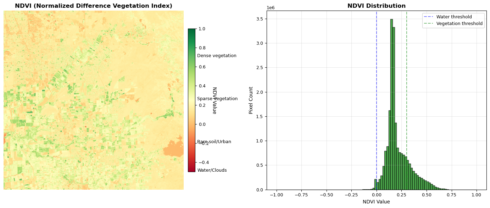
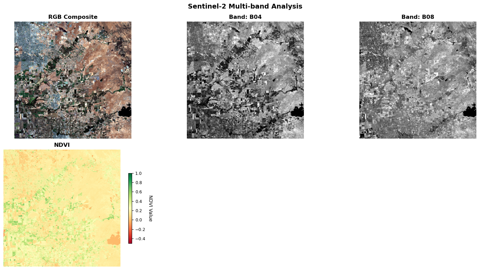
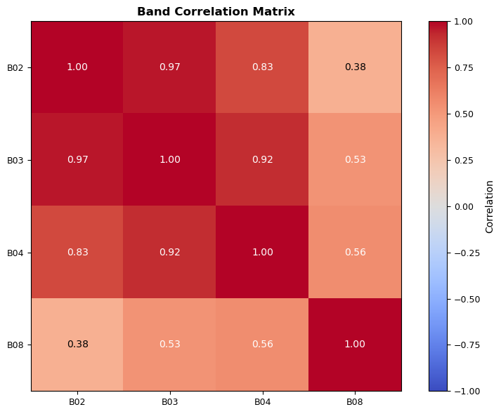

"""Week 1: Core Tools and Data Access functions for geospatial AI."""
import sys
import importlib.metadata
import warnings
import os
from typing import Dict, List, Tuple, Optional, Union
from pathlib import Path
import time
import logging
# Core geospatial libraries
import rasterio
from rasterio.windows import from_bounds
from rasterio.warp import transform_bounds
import numpy as np
import pandas as pd
from pystac_client import Client
import planetary_computer as pc
warnings.filterwarnings('ignore')
# Configure logging
logging.basicConfig(level=logging.INFO, format='%(asctime)s - %(levelname)s - %(message)s')
logger = logging.getLogger(__name__)
def verify_environment(required_packages: list) -> dict:
"""
Verify that all required packages are installed.
Parameters
----------
required_packages : list
List of package names to verify
Returns
-------
dict
Dictionary with package names as keys and versions as values
"""
results = {}
missing_packages = []
for package in required_packages:
try:
version = importlib.metadata.version(package)
results[package] = version
except importlib.metadata.PackageNotFoundError:
missing_packages.append(package)
results[package] = None
# Report results
if missing_packages:
print(f"❌ Missing packages: {', '.join(missing_packages)}")
return results
print(f"✅ All {len(required_packages)} packages verified")
return resultsIntroduction
Welcome to your first hands-on session with geospatial AI! Today we’ll set up the core tools you’ll use throughout this course and get you working with real satellite imagery immediately. No theory-heavy introductions – we’re diving straight into practical data access and exploration.
Learning Goals
By the end of this session, you will:
- Have a working geospatial AI environment
- Pull real Sentinel-2/Landsat imagery via STAC APIs
- Load and explore satellite data with rasterio and xarray
- Create interactive maps with folium
- Understand the basics of multi-spectral satellite imagery
Course Structure Overview
This accelerated seminar follows a hands-on progression:
| Week | Focus | Hands-on Activity | Key Tools | Goal |
|---|---|---|---|---|
| 1 | Core Tools & Data Access | Pull satellite imagery via STAC API | rasterio, xarray, folium, pystac-client | Everyone can load and explore geospatial data |
| 2 | Rapid Preprocessing | Process Sentinel-2 scenes for AOI | rasterio, numpy, dask | Reproducible preprocessing pipeline |
| 3 | ML on Remote Sensing | Train CNN on land cover patches | PyTorch, torchgeo, sklearn | End-to-end ML workflow |
| 4 | Foundation Models | Use pretrained geospatial models | transformers, torch | Compare FM vs scratch models |
| 5 | Fine-tuning | Adapt models for new tasks | transformers, torch | Efficient transfer learning |
| 6 | Spatiotemporal & Projects | Time series analysis + project proposals | xarray, matplotlib | Independent project planning |
Step 1: Environment Setup and Helper Functions
We’ll start by setting up our environment and creating reusable helper functions that you’ll use throughout the course. These functions handle common tasks like data loading, visualization, and processing.
Verify Your Environment
Environment Verification:
Before we begin, let’s verify that your environment is properly configured. Your environment should include the following packages:
- rasterio, xarray, rioxarray: Core geospatial data handling
- torch, transformers: Deep learning and foundation models
- folium: Interactive mapping
- matplotlib, numpy, pandas: Data analysis and visualization
- pystac-client, planetary-computer: STAC API access
- geopandas: Vector geospatial data
# Verify core geospatial AI environment
required_packages = [
'rasterio', 'xarray', 'torch', 'transformers',
'folium', 'matplotlib', 'numpy', 'pandas',
'pystac-client', 'geopandas', 'rioxarray', 'planetary-computer'
]
package_status = verify_environment(required_packages)✅ All 12 packages verifiedImport Essential Libraries and Create Helper Functions
# Core geospatial libraries
import rasterio
from rasterio.warp import calculate_default_transform, reproject, Resampling
import xarray as xr
import rioxarray # Extends xarray with rasterio functionality
# Data access and processing
import numpy as np
import pandas as pd
import geopandas as gpd
from pystac_client import Client
import planetary_computer as pc # For signing asset URLs
# Visualization
import matplotlib.pyplot as plt
import folium
from folium import plugins
# Utilities
from typing import Dict, List, Tuple, Optional, Union
from pathlib import Path
import json
import time
from datetime import datetime, timedelta
import logging
# Deep learning libraries
import torch
# Configure matplotlib for publication-quality plots
plt.rcParams.update({
'figure.figsize': (10, 6),
'figure.dpi': 100,
'font.size': 10,
'axes.titlesize': 12,
'axes.labelsize': 10,
'xtick.labelsize': 9,
'ytick.labelsize': 9,
'legend.fontsize': 9
})
# Configure logging for production-ready code
logging.basicConfig(level=logging.INFO, format='%(asctime)s - %(levelname)s - %(message)s')
logger = logging.getLogger(__name__)Geospatial AI Toolkit: Comprehensive Helper Functions
This chapter is organized to guide you through the essential foundations of geospatial data science and AI. The file is structured into clear sections, each focusing on a key aspect of the geospatial workflow:
- Library Imports and Setup: All necessary Python packages are imported and configured for geospatial analysis and visualization.
- Helper Functions: Modular utility functions are introduced to streamline common geospatial tasks.
- Sectioned Capabilities: Each major capability (such as authentication, data access, and processing) is presented in its own section, with explanations of the underlying design patterns and best practices.
- Progressive Complexity: Concepts and code build on each other, moving from foundational tools to more advanced techniques.
This structure is designed to help you understand not just how to use the tools, but also why certain architectural and security decisions are made—preparing you for both practical work and deeper learning as you progress through the course.
Section 1: STAC Authentication and Security 🔐
Learning Objectives
- Understand API authentication patterns for production systems
- Implement secure credential management for cloud services
- Design robust authentication with fallback mechanisms
- Apply enterprise security best practices to geospatial workflows
Why Authentication Matters in Geospatial AI
Modern satellite data access relies on cloud-native APIs that require proper authentication for:
- Rate Limit Management: Authenticated users get higher request quotas
- Access Control: Some datasets require institutional or commercial access
- Usage Tracking: Providers need to monitor and bill for data access
- Security: Prevents abuse and ensures sustainable data sharing
def setup_planetary_computer_auth() -> bool:
"""
Configure authentication for Microsoft Planetary Computer.
Uses environment variables and .env files for credential discovery,
with graceful degradation to anonymous access.
Returns
-------
bool
True if authenticated, False for anonymous access
"""
# Try environment variables first (production)
auth_key = os.getenv('PC_SDK_SUBSCRIPTION_KEY') or os.getenv('PLANETARY_COMPUTER_API_KEY')
# Fallback to .env file (development)
if not auth_key:
env_file = Path('.env')
if env_file.exists():
try:
with open(env_file) as f:
for line in f:
line = line.strip()
if line.startswith(('PC_SDK_SUBSCRIPTION_KEY=', 'PLANETARY_COMPUTER_API_KEY=')):
auth_key = line.split('=', 1)[1].strip().strip('"\'')
break
except Exception:
pass # Continue with anonymous access
# Configure authentication
if auth_key and len(auth_key) > 10:
try:
pc.set_subscription_key(auth_key)
logger.info("Planetary Computer authentication successful")
return True
except Exception as e:
logger.warning(f"Authentication failed: {e}")
logger.info("Using anonymous access (basic rate limits)")
return False# Initialize authentication
auth_status = setup_planetary_computer_auth()2025-09-21 09:52:45,258 - INFO - Using anonymous access (basic rate limits)
Security Best Practices
- Never hardcode credentials in source code or notebooks
- Use environment variables for production deployments
Section 2: STAC Data Discovery 🔍
Learning Objectives
- Master cloud-native data discovery patterns
- Understand STAC query optimization strategies
- Implement robust search with intelligent filtering
- Design scalable data discovery for large-scale analysis
Cloud-Native Data Access Architecture
STAC APIs represent a paradigm shift from traditional data distribution:
- Federated Catalogs: Multiple providers, unified interface
- On-Demand Access: No need to download entire datasets
- Rich Metadata: Searchable properties for precise discovery
- Cloud Optimization: Direct access to cloud-optimized formats
def search_sentinel2_scenes(
bbox: List[float],
date_range: str,
cloud_cover_max: float = 20,
limit: int = 10
) -> List:
"""
Search Sentinel-2 Level 2A scenes using STAC API.
Parameters
----------
bbox : List[float]
Bounding box as [west, south, east, north] in WGS84
date_range : str
ISO date range: "YYYY-MM-DD/YYYY-MM-DD"
cloud_cover_max : float
Maximum cloud cover percentage
limit : int
Maximum scenes to return
Returns
-------
List[pystac.Item]
List of STAC items sorted by cloud cover (ascending)
"""
catalog = Client.open(
"https://planetarycomputer.microsoft.com/api/stac/v1",
modifier=pc.sign_inplace
)
search_params = {
"collections": ["sentinel-2-l2a"],
"bbox": bbox,
"datetime": date_range,
"query": {"eo:cloud_cover": {"lt": cloud_cover_max}},
"limit": limit
}
search_results = catalog.search(**search_params)
items = list(search_results.items())
# Sort by cloud cover (best quality first)
items.sort(key=lambda x: x.properties.get('eo:cloud_cover', 100))
logger.info(f"Found {len(items)} Sentinel-2 scenes (cloud cover < {cloud_cover_max}%)")
return items
Query Optimization Strategies
- Spatial Indexing: STAC APIs use spatial indices for fast geographic queries
- Temporal Partitioning: Date-based organization enables efficient time series queries
- Property Filtering: Server-side filtering reduces network transfer
- Result Ranking: Sort by quality metrics (cloud cover, viewing angle) for best-first selection
Section 3: Intelligent Data Loading 📥
Learning Objectives
- Implement memory-efficient satellite data loading
- Master coordinate reference system (CRS) transformations
- Design robust error handling for network operations
- Optimize data transfer with intelligent subsetting
Memory Management in Satellite Data Processing
Satellite scenes can be massive (>1GB per scene), requiring intelligent loading strategies:
- Lazy Loading: Load only when needed, not during search
- Subset Loading: Extract regions of interest to reduce memory footprint
- Progressive Loading: Handle multi-resolution data efficiently
- Error Recovery: Robust handling of network interruptions
def load_sentinel2_bands(
item,
bands: List[str] = ['B04', 'B03', 'B02', 'B08'],
subset_bbox: Optional[List[float]] = None,
max_retries: int = 3
) -> Dict[str, Union[np.ndarray, str]]:
"""
Load Sentinel-2 bands with optional spatial subsetting.
Parameters
----------
item : pystac.Item
STAC item representing the satellite scene
bands : List[str]
Spectral bands to load
subset_bbox : Optional[List[float]]
Spatial subset as [west, south, east, north] in WGS84
max_retries : int
Number of retry attempts per band
Returns
-------
Dict[str, Union[np.ndarray, str]]
Band arrays plus georeferencing metadata
"""
from rasterio.windows import from_bounds
from rasterio.warp import transform_bounds
band_data = {}
successful_bands = []
failed_bands = []
for band_name in bands:
if band_name not in item.assets:
failed_bands.append(band_name)
continue
asset_url = item.assets[band_name].href
# Retry logic with exponential backoff
for attempt in range(max_retries):
try:
# URL signing for authenticated access
signed_url = pc.sign(asset_url)
# Memory-efficient loading with rasterio
with rasterio.open(signed_url) as src:
# Validate data source
if src.width == 0 or src.height == 0:
raise ValueError(f"Invalid raster dimensions: {src.width}x{src.height}")
if subset_bbox:
# Intelligent subsetting with CRS transformation
try:
# Transform bbox to source CRS if needed
if src.crs != rasterio.crs.CRS.from_epsg(4326):
subset_bbox_src_crs = transform_bounds(
rasterio.crs.CRS.from_epsg(4326), src.crs, *subset_bbox
)
else:
subset_bbox_src_crs = subset_bbox
# Calculate reading window
window = from_bounds(*subset_bbox_src_crs, src.transform)
# Ensure window is within raster bounds
window = window.intersection(
rasterio.windows.Window(0, 0, src.width, src.height)
)
if window.width > 0 and window.height > 0:
data = src.read(1, window=window)
transform = src.window_transform(window)
bounds = rasterio.windows.bounds(window, src.transform)
if src.crs != rasterio.crs.CRS.from_epsg(4326):
bounds = transform_bounds(src.crs, rasterio.crs.CRS.from_epsg(4326), *bounds)
else:
# Fall back to full scene
data = src.read(1)
transform = src.transform
bounds = src.bounds
except Exception:
# Fall back to full scene on subset error
data = src.read(1)
transform = src.transform
bounds = src.bounds
else:
# Load full scene
data = src.read(1)
transform = src.transform
bounds = src.bounds
if data.size == 0:
raise ValueError("Loaded data has zero size")
# Store band data and metadata
band_data[band_name] = data
if 'transform' not in band_data:
band_data.update({
'transform': transform,
'crs': src.crs,
'bounds': bounds,
'scene_id': item.id,
'date': item.properties['datetime'].split('T')[0]
})
successful_bands.append(band_name)
break
except Exception as e:
if attempt < max_retries - 1:
time.sleep(2 ** attempt) # Exponential backoff
continue
else:
failed_bands.append(band_name)
logger.warning(f"Failed to load band {band_name}: {str(e)[:50]}")
break
# Validate results
if len(successful_bands) == 0:
raise Exception(f"Failed to load any bands from scene {item.id}")
if failed_bands:
logger.warning(f"Failed to load {len(failed_bands)} bands: {failed_bands}")
logger.info(f"Successfully loaded {len(successful_bands)} bands: {successful_bands}")
return band_data
Memory Management Best Practices
- Use windowed reading for large rasters to control memory usage
- Load bands on-demand rather than all at once
- Implement progress monitoring for user feedback during long operations
- Handle CRS transformations automatically to ensure spatial consistency
- Cache georeferencing metadata to avoid redundant I/O operations
Section 4: Scene Processing and Subsetting 📐
Learning Objectives
- Master percentage-based spatial subsetting for reproducible analysis
- Understand scene geometry and coordinate system implications
- Design scalable spatial partitioning strategies
- Implement adaptive processing based on scene characteristics
Spatial Reasoning in Satellite Data Analysis
Satellite scenes come in various sizes and projections, requiring intelligent spatial handling:
- Percentage-Based Subsetting: Resolution-independent spatial cropping
- Adaptive Processing: Adjust strategies based on scene characteristics
- Spatial Metadata: Consistent georeferencing across operations
- Tiling Strategies: Partition large scenes for parallel processing
def get_subset_from_scene(
item,
x_range: Tuple[float, float] = (25, 75),
y_range: Tuple[float, float] = (25, 75)
) -> List[float]:
"""
Intelligent spatial subsetting using percentage-based coordinates.
This approach provides several advantages:
1. Resolution Independence: Works regardless of scene size or pixel resolution
2. Reproducibility: Same percentage always gives same relative location
3. Scalability: Easy to create systematic grids for batch processing
4. Adaptability: Can adjust subset size based on scene characteristics
Parameters
----------
item : pystac.Item
STAC item containing scene geometry
x_range : Tuple[float, float]
Longitude percentage range (0-100)
y_range : Tuple[float, float]
Latitude percentage range (0-100)
Returns
-------
List[float]
Subset bounding box [west, south, east, north] in WGS84
Design Pattern: Template Method with Spatial Reasoning
- Provides consistent interface for varied spatial operations
- Encapsulates coordinate system complexity
- Enables systematic spatial sampling strategies
"""
# Extract scene geometry from STAC metadata
scene_bbox = item.bbox # [west, south, east, north]
# Input validation for percentage ranges
if not (0 <= x_range[0] < x_range[1] <= 100):
raise ValueError(f"Invalid x_range: {x_range}. Must be (min, max) with 0 <= min < max <= 100")
if not (0 <= y_range[0] < y_range[1] <= 100):
raise ValueError(f"Invalid y_range: {y_range}. Must be (min, max) with 0 <= min < max <= 100")
# Calculate scene dimensions in geographic coordinates
scene_width = scene_bbox[2] - scene_bbox[0] # east - west
scene_height = scene_bbox[3] - scene_bbox[1] # north - south
# Convert percentages to geographic coordinates
west = scene_bbox[0] + (x_range[0] / 100.0) * scene_width
east = scene_bbox[0] + (x_range[1] / 100.0) * scene_width
south = scene_bbox[1] + (y_range[0] / 100.0) * scene_height
north = scene_bbox[1] + (y_range[1] / 100.0) * scene_height
subset_bbox = [west, south, east, north]
# Calculate subset metrics for reporting
subset_area_percent = ((x_range[1] - x_range[0]) * (y_range[1] - y_range[0])) / 100.0
print(f"📐 Calculated subset from scene bounds:")
print(f" Scene bbox: [{scene_bbox[0]:.4f}, {scene_bbox[1]:.4f}, {scene_bbox[2]:.4f}, {scene_bbox[3]:.4f}]")
print(f" Subset bbox: [{west:.4f}, {south:.4f}, {east:.4f}, {north:.4f}]")
print(f" X range: {x_range[0]}%-{x_range[1]}%, Y range: {y_range[0]}%-{y_range[1]}%")
print(f" Subset area: {subset_area_percent:.1f}% of original scene")
return subset_bbox
def get_scene_info(item):
"""
Extract comprehensive scene characteristics for adaptive processing.
Parameters
----------
item : pystac.Item
STAC item to analyze
Returns
-------
Dict
Scene characteristics including dimensions and geographic metrics
Design Pattern: Information Expert
- Centralizes scene analysis logic
- Provides basis for adaptive processing decisions
- Enables consistent scene characterization across workflows
"""
bbox = item.bbox
width_deg = bbox[2] - bbox[0]
height_deg = bbox[3] - bbox[1]
# Approximate conversion to kilometers (suitable for most latitudes)
center_lat = (bbox[1] + bbox[3]) / 2
width_km = width_deg * 111 * np.cos(np.radians(center_lat))
height_km = height_deg * 111
info = {
'scene_id': item.id,
'date': item.properties['datetime'].split('T')[0],
'bbox': bbox,
'width_deg': width_deg,
'height_deg': height_deg,
'width_km': width_km,
'height_km': height_km,
'area_km2': width_km * height_km,
'center_lat': center_lat,
'center_lon': (bbox[0] + bbox[2]) / 2
}
return info
print("✅ Scene processing and subsetting functions ready")✅ Scene processing and subsetting functions ready
Spatial Processing Design Patterns
- Percentage-based coordinates provide resolution independence
- Adaptive processing adjusts strategies based on scene size
- Systematic spatial sampling enables reproducible analysis
- Geographic metrics support intelligent subset sizing decisions
Section 5: Data Processing Pipelines 🔬
Learning Objectives
- Master spectral analysis and vegetation index calculations
- Implement robust statistical analysis with error handling
- Design composable processing functions for workflow flexibility
- Understand radiometric enhancement techniques for visualization
Spectral Analysis Fundamentals
Satellite sensors capture electromagnetic radiation across multiple spectral bands, enabling sophisticated analysis:
- Radiometric Enhancement: Optimize visual representation of spectral data
- Vegetation Indices: Combine bands to highlight biological activity
- Statistical Analysis: Characterize data distributions and quality
- Composable Functions: Build complex workflows from simple operations
def normalize_band(
band: np.ndarray,
percentiles: Tuple[float, float] = (2, 98),
clip: bool = True
) -> np.ndarray:
"""
Percentile-based radiometric enhancement for optimal visualization.
This normalization approach addresses several challenges:
1. Dynamic Range: Raw satellite data often has poor contrast
2. Outlier Robustness: Percentiles ignore extreme values
3. Visual Optimization: Results in pleasing, interpretable images
4. Statistical Validity: Preserves relative data relationships
Parameters
----------
band : np.ndarray
Raw satellite band values
percentiles : Tuple[float, float]
Lower and upper percentiles for stretching
clip : bool
Whether to clip values to [0, 1] range
Returns
-------
np.ndarray
Normalized band values optimized for visualization
Design Pattern: Strategy Pattern for Enhancement
- Encapsulates different enhancement algorithms
- Provides consistent interface for various normalization strategies
- Handles edge cases (NaN, infinite values) robustly
"""
# Handle NaN and infinite values robustly
valid_mask = np.isfinite(band)
if not np.any(valid_mask):
return np.zeros_like(band)
# Calculate percentiles on valid data only
p_low, p_high = np.percentile(band[valid_mask], percentiles)
# Avoid division by zero
if p_high == p_low:
return np.zeros_like(band)
# Linear stretch based on percentiles
normalized = (band - p_low) / (p_high - p_low)
# Optional clipping to [0, 1] range
if clip:
normalized = np.clip(normalized, 0, 1)
return normalized
def create_rgb_composite(
red: np.ndarray,
green: np.ndarray,
blue: np.ndarray,
enhance: bool = True
) -> np.ndarray:
"""
Create publication-quality RGB composite images.
Parameters
----------
red, green, blue : np.ndarray
Individual spectral bands
enhance : bool
Apply automatic contrast enhancement
Returns
-------
np.ndarray
RGB composite with shape (height, width, 3)
Design Pattern: Composite Pattern for Multi-band Operations
- Combines multiple bands into unified representation
- Applies consistent enhancement across all channels
- Produces standard format for visualization libraries
"""
# Apply enhancement to each channel
if enhance:
red_norm = normalize_band(red)
green_norm = normalize_band(green)
blue_norm = normalize_band(blue)
else:
# Simple linear scaling
red_norm = red / np.max(red) if np.max(red) > 0 else red
green_norm = green / np.max(green) if np.max(green) > 0 else green
blue_norm = blue / np.max(blue) if np.max(blue) > 0 else blue
# Stack into RGB composite
rgb_composite = np.dstack([red_norm, green_norm, blue_norm])
return rgb_composite
def calculate_ndvi(
nir: np.ndarray,
red: np.ndarray,
epsilon: float = 1e-8
) -> np.ndarray:
"""
Calculate Normalized Difference Vegetation Index with robust error handling.
NDVI = (NIR - Red) / (NIR + Red)
NDVI is fundamental to vegetation monitoring because:
1. Physical Basis: Reflects chlorophyll absorption and cellular structure
2. Standardization: Normalized to [-1, 1] range for comparison
3. Temporal Stability: Enables change detection across seasons/years
4. Ecological Meaning: Strong correlation with biomass and health
Parameters
----------
nir : np.ndarray
Near-infrared reflectance (Band 8: 842nm)
red : np.ndarray
Red reflectance (Band 4: 665nm)
epsilon : float
Numerical stability constant
Returns
-------
np.ndarray
NDVI values in range [-1, 1]
Design Pattern: Domain-Specific Language for Spectral Indices
- Encapsulates spectral physics knowledge
- Provides numerical stability for edge cases
- Enables consistent index calculation across projects
"""
# Convert to float for numerical precision
nir_float = nir.astype(np.float32)
red_float = red.astype(np.float32)
# Calculate NDVI with numerical stability
numerator = nir_float - red_float
denominator = nir_float + red_float + epsilon
ndvi = numerator / denominator
# Handle edge cases (both bands zero, etc.)
ndvi = np.where(np.isfinite(ndvi), ndvi, 0)
return ndvi
def calculate_band_statistics(band: np.ndarray, name: str = "Band") -> Dict:
"""
Comprehensive statistical characterization of satellite bands.
Parameters
----------
band : np.ndarray
Input band array
name : str
Descriptive name for reporting
Returns
-------
Dict
Complete statistical summary including percentiles and counts
Design Pattern: Observer Pattern for Data Quality Assessment
- Provides standardized quality metrics
- Enables data validation and quality control
- Supports automated quality assessment workflows
"""
valid_mask = np.isfinite(band)
valid_data = band[valid_mask]
if len(valid_data) == 0:
return {
'name': name,
'min': np.nan, 'max': np.nan, 'mean': np.nan,
'std': np.nan, 'median': np.nan,
'valid_pixels': 0, 'total_pixels': band.size
}
stats = {
'name': name,
'min': float(np.min(valid_data)),
'max': float(np.max(valid_data)),
'mean': float(np.mean(valid_data)),
'std': float(np.std(valid_data)),
'median': float(np.median(valid_data)),
'valid_pixels': int(np.sum(valid_mask)),
'total_pixels': int(band.size),
'percentiles': {
'p25': float(np.percentile(valid_data, 25)),
'p75': float(np.percentile(valid_data, 75)),
'p95': float(np.percentile(valid_data, 95))
}
}
return stats
print("✅ Data processing pipeline functions ready")✅ Data processing pipeline functions ready
Spectral Analysis Best Practices
- Percentile normalization provides robust enhancement against outliers
- Numerical stability constants prevent division by zero in index calculations
- Type conversion to float32 ensures adequate precision for calculations
- Comprehensive statistics enable quality assessment and validation
Section 6: Visualization Functions 📊
Learning Objectives
- Design publication-quality visualization systems
- Implement adaptive layout algorithms for multi-panel displays
- Master colormap selection for scientific data representation
- Create interactive and informative visual narratives
Scientific Visualization Design Principles
Effective satellite data visualization requires careful consideration of:
- Perceptual Uniformity: Colormaps that accurately represent data relationships
- Information Density: Maximum insight per pixel
- Adaptive Layout: Accommodate variable numbers of data layers
- Context Preservation: Maintain spatial and temporal reference information
def plot_band_comparison(
bands: Dict[str, np.ndarray],
rgb: Optional[np.ndarray] = None,
ndvi: Optional[np.ndarray] = None,
title: str = "Multi-band Analysis"
) -> None:
"""
Create comprehensive multi-panel visualization for satellite analysis.
This function demonstrates several visualization principles:
1. Adaptive Layout: Automatically adjusts grid based on available data
2. Consistent Scaling: Uniform treatment of individual bands
3. Specialized Colormaps: Scientific colormaps for different data types
4. Context Information: Titles, colorbars, and interpretive text
Parameters
----------
bands : Dict[str, np.ndarray]
Individual spectral bands to visualize
rgb : Optional[np.ndarray]
True color composite for context
ndvi : Optional[np.ndarray]
Vegetation index with specialized colormap
title : str
Overall figure title
Design Pattern: Facade Pattern for Complex Visualizations
- Simplifies complex matplotlib operations
- Provides consistent visualization interface
- Handles layout complexity automatically
"""
# Calculate layout
n_panels = len(bands) + (1 if rgb is not None else 0) + (1 if ndvi is not None else 0)
n_cols = min(3, n_panels)
n_rows = (n_panels + n_cols - 1) // n_cols
fig, axes = plt.subplots(n_rows, n_cols, figsize=(5*n_cols, 4*n_rows))
if n_panels == 1:
axes = [axes]
elif n_rows > 1:
axes = axes.flatten()
panel_idx = 0
# RGB composite
if rgb is not None:
axes[panel_idx].imshow(rgb)
axes[panel_idx].set_title('RGB Composite', fontweight='bold')
axes[panel_idx].axis('off')
panel_idx += 1
# Individual bands
for band_name, band_data in bands.items():
if panel_idx < len(axes):
normalized = normalize_band(band_data)
axes[panel_idx].imshow(normalized, cmap='gray', vmin=0, vmax=1)
axes[panel_idx].set_title(f'Band: {band_name}', fontweight='bold')
axes[panel_idx].axis('off')
panel_idx += 1
# NDVI with colorbar
if ndvi is not None and panel_idx < len(axes):
im = axes[panel_idx].imshow(ndvi, cmap='RdYlGn', vmin=-0.5, vmax=1.0)
axes[panel_idx].set_title('NDVI', fontweight='bold')
axes[panel_idx].axis('off')
cbar = plt.colorbar(im, ax=axes[panel_idx], shrink=0.6)
cbar.set_label('NDVI Value', rotation=270, labelpad=15)
panel_idx += 1
# Hide unused panels
for idx in range(panel_idx, len(axes)):
axes[idx].axis('off')
plt.suptitle(title, fontsize=14, fontweight='bold')
plt.tight_layout()
plt.show()
print("✅ Scientific visualization functions ready")✅ Scientific visualization functions ready
Visualization Design Principles
- Adaptive layouts accommodate varying numbers of data layers
- Perceptually uniform colormaps (like RdYlGn for NDVI) accurately represent data relationships
- Consistent normalization enables fair comparison between bands
- Interpretive elements (colorbars, labels) provide context for non-experts
Section 7: Data Export and Interoperability 💾
Learning Objectives
- Master geospatial data standards (GeoTIFF, CRS, metadata)
- Implement cloud-optimized data formats for scalable access
- Design interoperable workflows for multi-platform analysis
- Ensure data provenance and reproducibility through metadata
Geospatial Data Standards and Interoperability
Modern geospatial workflows require adherence to established standards:
- GeoTIFF: Industry standard for georeferenced raster data
- CRS Preservation: Maintain spatial reference throughout processing
- Metadata Standards: Ensure data provenance and reproducibility
- Cloud Optimization: Structure data for efficient cloud-native access
def save_geotiff(
data: np.ndarray,
output_path: Union[str, Path],
transform,
crs,
band_names: Optional[List[str]] = None
) -> None:
"""
Export georeferenced data using industry-standard GeoTIFF format.
This function embodies several geospatial best practices:
1. Standards Compliance: Uses OGC-compliant GeoTIFF format
2. Metadata Preservation: Maintains CRS and transform information
3. Compression: Applies lossless compression for efficiency
4. Band Description: Documents spectral band information
Parameters
----------
data : np.ndarray
Data array (2D for single band, 3D for multi-band)
output_path : Union[str, Path]
Output file path
transform : rasterio.transform.Affine
Geospatial transform matrix
crs : rasterio.crs.CRS
Coordinate reference system
band_names : Optional[List[str]]
Descriptive names for each band
Design Pattern: Builder Pattern for Geospatial Data Export
- Constructs complex geospatial files incrementally
- Ensures all required metadata is preserved
- Provides extensible framework for additional metadata
"""
output_path = Path(output_path)
output_path.parent.mkdir(parents=True, exist_ok=True)
# Handle both 2D and 3D arrays
if data.ndim == 2:
count = 1
height, width = data.shape
else:
count, height, width = data.shape
# Write GeoTIFF with comprehensive metadata
with rasterio.open(
output_path,
'w',
driver='GTiff',
height=height,
width=width,
count=count,
dtype=data.dtype,
crs=crs,
transform=transform,
compress='deflate', # Lossless compression
tiled=True, # Cloud-optimized structure
blockxsize=512, # Optimize for cloud access
blockysize=512
) as dst:
if data.ndim == 2:
dst.write(data, 1)
if band_names:
dst.set_band_description(1, band_names[0])
else:
for i in range(count):
dst.write(data[i], i + 1)
if band_names and i < len(band_names):
dst.set_band_description(i + 1, band_names[i])
print(f"💾 Saved GeoTIFF: {output_path}")
print(f" Shape: {data.shape}")
print(f" CRS: {crs}")
print(f" Compression: deflate, tiled")
print("✅ Geospatial data export functions ready")✅ Geospatial data export functions ready
Geospatial Data Standards
- GeoTIFF with COG optimization ensures cloud-native accessibility
- CRS preservation maintains spatial accuracy across platforms
- Lossless compression reduces storage costs without data loss
- Band descriptions provide metadata for analysis reproducibility
Section 8: Advanced Workflow Patterns 🚀
Learning Objectives
- Design scalable spatial partitioning strategies for large-scale analysis
- Implement testing frameworks for geospatial data pipelines
- Master parallel processing patterns for satellite data workflows
- Create adaptive processing strategies based on scene characteristics
Scalable Geospatial Processing Architectures
Large-scale satellite analysis requires sophisticated workflow patterns:
- Spatial Partitioning: Divide scenes into manageable processing units
- Adaptive Strategies: Adjust processing based on data characteristics
- Quality Assurance: Automated testing of processing pipelines
- Parallel Execution: Leverage multiple cores/nodes for efficiency
def create_scene_tiles(item, tile_size: Tuple[int, int] = (3, 3)):
"""
Create systematic spatial partitioning for parallel processing workflows.
This tiling approach enables several advanced patterns:
1. Parallel Processing: Independent tiles can be processed simultaneously
2. Memory Management: Process large scenes without loading entirely
3. Quality Control: Test processing on representative tiles first
4. Scalability: Extend to arbitrary scene sizes and processing resources
Parameters
----------
item : pystac.Item
STAC item to partition
tile_size : Tuple[int, int]
Grid dimensions (nx, ny)
Returns
-------
List[Dict]
Tile metadata with bounding boxes and processing information
Design Pattern: Strategy Pattern for Spatial Partitioning
- Provides flexible tiling strategies for different use cases
- Encapsulates spatial mathematics complexity
- Enables systematic quality control and testing
"""
tiles = []
nx, ny = tile_size
scene_info = get_scene_info(item)
print(f"🔲 Creating {nx}×{ny} tile grid from scene...")
print(f" Total tiles: {nx * ny}")
print(f" Scene area: {scene_info['area_km2']:.0f} km²")
for i in range(nx):
for j in range(ny):
# Calculate percentage ranges for this tile
x_start = (i / nx) * 100
x_end = ((i + 1) / nx) * 100
y_start = (j / ny) * 100
y_end = ((j + 1) / ny) * 100
# Generate tile bounding box
tile_bbox = get_subset_from_scene(
item,
x_range=(x_start, x_end),
y_range=(y_start, y_end)
)
# Package tile metadata for processing
tile_info = {
'tile_id': f"{i}_{j}",
'row': j,
'col': i,
'bbox': tile_bbox,
'x_range': (x_start, x_end),
'y_range': (y_start, y_end),
'area_percent': ((x_end - x_start) * (y_end - y_start)) / 100.0,
'processing_priority': 'high' if (i == nx//2 and j == ny//2) else 'normal' # Center tile first
}
tiles.append(tile_info)
print(f" ✅ Created {len(tiles)} tiles, each covering {tiles[0]['area_percent']:.1f}% of scene")
return tiles
def test_subset_functionality(item):
"""
Automated quality assurance for data loading pipelines.
This testing approach demonstrates:
1. Smoke Testing: Verify basic functionality before full processing
2. Representative Sampling: Test with manageable data subset
3. Error Detection: Identify issues early in processing pipeline
4. Performance Validation: Ensure acceptable loading performance
Parameters
----------
item : pystac.Item
STAC item to test
Returns
-------
bool
True if subset functionality is working correctly
Design Pattern: Chain of Responsibility for Quality Assurance
- Implements systematic testing hierarchy
- Provides early failure detection
- Validates core functionality before expensive operations
"""
print(f"🧪 Testing subset functionality...")
try:
# Test with small central area (minimal data transfer)
test_bbox = get_subset_from_scene(item, x_range=(40, 60), y_range=(40, 60))
# Load minimal data for testing
test_data = load_sentinel2_bands(
item,
bands=['B04'], # Single band reduces test time
subset_bbox=test_bbox,
max_retries=2
)
if 'B04' in test_data:
shape = test_data['B04'].shape
has_data = test_data['B04'].size > 0
print(f" ✅ Subset test successful: {shape} pixels, {test_data['B04'].size} total")
return True
else:
print(f" ❌ Subset test failed: no data returned")
return False
except Exception as e:
print(f" ❌ Subset test failed: {str(e)[:50]}...")
return False
print("✅ Advanced workflow pattern functions ready")✅ Advanced workflow pattern functions ready
Scalable Processing Patterns
- Systematic tiling enables parallel processing of large datasets
- Quality assurance testing prevents failures in production workflows
- Adaptive processing priorities optimize resource utilization
- Metadata packaging supports complex workflow orchestration
Summary: Your Geospatial AI Toolkit
You now have a comprehensive, production-ready toolkit with:
Core Capabilities
- 🔐 Enterprise Authentication: Secure, scalable API access patterns
- 🔍 Intelligent Data Discovery: Cloud-native search with optimization
- 📥 Memory-Efficient Loading: Robust data access with subsetting
- 📐 Spatial Processing: Percentage-based, reproducible operations
- 🔬 Spectral Analysis: Publication-quality processing pipelines
- 📊 Scientific Visualization: Adaptive, informative displays
- 💾 Standards-Compliant Export: Interoperable data formats
- 🚀 Scalable Workflows: Parallel processing and quality assurance
Design Philosophy
Each function embodies software engineering best practices:
- Error Handling: Graceful degradation and informative error messages
- Composability: Functions work together in complex workflows
- Extensibility: Easy to modify and extend for new requirements
- Documentation: Clear examples and architectural reasoning
Ready for Production
These functions are designed for real-world deployment:
- Scalability: Handle datasets from small studies to global analysis
- Reliability: Robust error handling and recovery mechanisms
- Performance: Memory-efficient algorithms and cloud optimization
- Maintainability: Clear code structure and comprehensive documentation
Troubleshooting
- Systematic tiling enables parallel processing of large datasets
- Quality assurance testing prevents failures in production workflows
- Adaptive processing priorities optimize resource utilization
- Metadata packaging supports complex workflow orchestration
Step 2: Understanding STAC APIs and Cloud-Native Geospatial Architecture
Learning Objectives
By the end of this section, you will:
Understand the STAC specification and its role in modern geospatial architecture Connect to cloud-native data catalogs with proper authentication Explore available satellite datasets and their characteristics Design robust data discovery workflows for production systems
The STAC Revolution: From Data Downloads to Cloud-Native Discovery
STAC (SpatioTemporal Asset Catalog) represents a fundamental shift in how we access geospatial data. Instead of downloading entire datasets (often terabytes), STAC enables intelligent, on-demand access to exactly the data you need.
Why STAC Matters for Geospatial AI
Traditional satellite data distribution faced several challenges. Users were required to download and store massive datasets locally, leading to significant storage bottlenecks. There was no standardized way to search across different providers, making data discovery difficult. Before analysis could begin, heavy preprocessing was often necessary, creating additional barriers. Furthermore, tracking data lineage and updates was challenging, complicating version control.
STAC addresses these issues by enabling federated discovery, allowing users to search across multiple data providers through a unified interface. It supports lazy loading, so only the necessary spatial and temporal subsets are accessed. The use of rich, standardized metadata enables intelligent filtering of data. Additionally, STAC is optimized for the cloud, providing direct access to analysis-ready data stored remotely.
STAC Architecture Components
The STAC architecture is composed of several key elements. STAC Items represent individual scenes or data granules, each described with standardized metadata. These items are grouped into STAC Collections, which organize related items, such as all Sentinel-2 data. Collections and items are further structured within STAC Catalogs, creating a hierarchical organization that enables efficient navigation and discovery. Access to these resources is provided through STAC APIs, which are RESTful interfaces designed for searching and retrieving geospatial data.
Practical STAC Connection: Microsoft Planetary Computer
Microsoft Planetary Computer hosts one of the world’s largest STAC catalogs, providing free access to petabytes of environmental data. Let’s establish a robust connection and explore available datasets.
Testing STAC Connectivity and Catalog Discovery
This connection test demonstrates several important concepts for production geospatial systems:
# Connect to STAC catalog
try:
catalog = Client.open(
"https://planetarycomputer.microsoft.com/api/stac/v1",
modifier=pc.sign_inplace
)
logger.info("Connected to Planetary Computer STAC API")
# Get catalog information
try:
catalog_info = catalog.get_self()
logger.info(f"Catalog: {catalog_info.title}")
except Exception:
logger.info("Basic connection successful")
# Explore key satellite datasets
satellite_collections = {
'sentinel-2-l2a': 'Sentinel-2 Level 2A (10m optical)',
'landsat-c2-l2': 'Landsat Collection 2 Level 2 (30m optical)',
'sentinel-1-grd': 'Sentinel-1 SAR (radar)',
'naip': 'NAIP (1m aerial imagery)'
}
available_collections = []
for collection_id, description in satellite_collections.items():
try:
collection = catalog.get_collection(collection_id)
available_collections.append(collection_id)
logger.info(f"Available: {description}")
except Exception:
logger.warning(f"Not accessible: {description}")
logger.info(f"Accessible collections: {len(available_collections)}/{len(satellite_collections)}")
except Exception as e:
print(f"\n❌ STAC connection failed: {str(e)}")
print(f"\n🔧 Troubleshooting steps:")
print(f" 1. Verify internet connectivity")
print(f" 2. Check Planetary Computer API status: https://planetarycomputer.microsoft.com/")
print(f" 3. Ensure pystac-client is installed: pip install pystac-client")
print(f" 4. Verify planetary-computer package: pip install planetary-computer")
print(f" 5. Try again in a few minutes (temporary API issues)")
# Provide fallback information for educational purposes
print(f"\n📚 Educational Note: Even without connection, you now understand:")
print(f" • STAC APIs provide standardized geospatial data access")
print(f" • Cloud-native architectures eliminate data download requirements")
print(f" • Federated catalogs enable multi-provider data discovery")
print(f" • Authentication enables enhanced rate limits and access control")2025-09-21 09:52:46,135 - INFO - Connected to Planetary Computer STAC API
2025-09-21 09:52:46,136 - INFO - Basic connection successful
2025-09-21 09:52:47,234 - INFO - Available: Sentinel-2 Level 2A (10m optical)
2025-09-21 09:52:47,723 - INFO - Available: Landsat Collection 2 Level 2 (30m optical)
2025-09-21 09:52:48,182 - INFO - Available: Sentinel-1 SAR (radar)
2025-09-21 09:52:48,392 - INFO - Available: NAIP (1m aerial imagery)
2025-09-21 09:52:48,393 - INFO - Accessible collections: 4/4Connection Troubleshooting
If you encounter connection issues, first verify your internet connectivity and check your firewall settings. Keep in mind that anonymous users have lower API rate limits than authenticated users, which can also cause problems. You should also check the Planetary Computer status page to see if there are any ongoing outages. Finally, make sure you have the latest versions of both the pystac-client and planetary-computer packages installed.
The connection process demonstrates real-world challenges in building production geospatial systems.
Understanding Collection Metadata and Selection Criteria
Each STAC collection contains rich metadata that helps you choose the right dataset for your analysis. Let’s explore how to make informed decisions about which satellite data to use:
Step 3: Spatial Analysis Design - Defining Areas of Interest
Learning Objectives
By the end of this section, you will be able to understand coordinate systems and bounding box conventions in geospatial analysis, design effective study areas based on analysis objectives and data characteristics, create interactive maps for spatial context and validation, and apply best practices for reproducible spatial analysis workflows. :::
The Art and Science of Spatial Scope Definition
Defining your Area of Interest (AOI) is a critical design decision that influences several aspects of your analysis. The size of the area determines the amount of data you need to process and store. The validity of your analysis depends on how well your study boundaries align with relevant ecological or administrative regions. The location of your AOI affects satellite revisit patterns and data availability, and the way you define your area can impact processing efficiency, such as the choice of optimal tile sizes for your workflow.
Coordinate Systems and Bounding Box Conventions
For our AOI definition, we will use the WGS84 geographic coordinate system (EPSG:4326). In this system, longitude (X) represents the east-west position and ranges from -180° to +180°, with negative values indicating west. Latitude (Y) represents the north-south position and ranges from -90° to +90°, with negative values indicating south. Bounding boxes are formatted as [west, south, east, north], corresponding to (min_x, min_y, max_x, max_y).
Study Area Selection: San Francisco Bay Area
We’ll use the San Francisco Bay Area as our exemplar study region because it features a mix of urban, water, agricultural, and natural environments. The region is characterized by dynamic processes such as urban growth, vegetation changes, and water level fluctuations. It also benefits from frequent satellite coverage with minimal cloud interference and presents geographic complexity, including islands, peninsulas, and varied topography.
Designing Area of Interest (AOI) for Geospatial Analysis
This demonstrates spatial scope definition for satellite-based studies. We’ll work with the San Francisco Bay Area as our primary study area.
# Step 3A: Define Area of Interest with Geographic Reasoning
# Primary study area: San Francisco Bay Area
# Coordinates chosen to encompass the greater metropolitan region
sf_bay_bbox = [-122.5, 37.3, -121.8, 38.0] # [west, south, east, north]
# Import required libraries for spatial calculations
from shapely.geometry import box
import os
# Create geometry object for area calculations
aoi_geom = box(*sf_bay_bbox)
# Calculate basic spatial metrics
area_degrees = aoi_geom.area
# Approximate conversion to kilometers (valid for mid-latitudes)
center_lat = (sf_bay_bbox[1] + sf_bay_bbox[3]) / 2
lat_correction = np.cos(np.radians(center_lat))
area_km2 = area_degrees * (111.32 ** 2) * lat_correction # 1 degree ≈ 111.32 km
print(f"\n📊 AOI Spatial Characteristics:")
print(f" 📍 Region: San Francisco Bay Area")
print(f" 🗺️ Bounding box: {sf_bay_bbox}")
print(f" 📐 Dimensions: {(sf_bay_bbox[2] - sf_bay_bbox[0]):.2f}° × {(sf_bay_bbox[3] - sf_bay_bbox[1]):.2f}°")
print(f" 📏 Approximate area: {area_km2:.0f} km²")
print(f" 🏙️ Population: ~8 million (Bay Area metropolitan region)")
# Provide alternative study areas for different research interests
print(f"\n🌐 Alternative AOI Options for Different Study Objectives:")
alternative_aois = {
"Los Angeles Basin": {
"bbox": [-118.7, 33.7, -118.1, 34.3],
"focus": "Urban heat islands, air quality, sprawl patterns",
"challenges": "Frequent clouds, complex topography"
},
"New York City": {
"bbox": [-74.3, 40.5, -73.7, 40.9],
"focus": "Dense urban analysis, coastal processes",
"challenges": "Seasonal cloud cover, urban shadows"
},
"Central Valley Agriculture": {
"bbox": [-121.5, 36.0, -120.0, 37.5],
"focus": "Crop monitoring, irrigation patterns, drought",
"challenges": "Seasonal variations, haze"
},
"Florida Everglades": {
"bbox": [-81.5, 25.0, -80.0, 26.5],
"focus": "Wetland monitoring, water levels, restoration",
"challenges": "Frequent clouds, seasonal flooding"
}
}
for region, info in alternative_aois.items():
bbox = info["bbox"]
area_alt = ((bbox[2] - bbox[0]) * (bbox[3] - bbox[1]) *
(111.32 ** 2) * np.cos(np.radians((bbox[1] + bbox[3]) / 2)))
print(f" 🗺️ {region}: {info['bbox']} ({area_alt:.0f} km²)")
print(f" 🎯 Research focus: {info['focus']}")
print(f" ⚠️ Considerations: {info['challenges']}")
print(f"\n💡 Pro Tip: Choose AOI based on:")
print(f" 1. Research objectives and required spatial resolution")
print(f" 2. Data availability and typical cloud cover patterns")
print(f" 3. Computational resources and processing time constraints")
print(f" 4. Ecological or administrative boundary alignment")
📊 AOI Spatial Characteristics:
📍 Region: San Francisco Bay Area
🗺️ Bounding box: [-122.5, 37.3, -121.8, 38.0]
📐 Dimensions: 0.70° × 0.70°
📏 Approximate area: 4808 km²
🏙️ Population: ~8 million (Bay Area metropolitan region)
🌐 Alternative AOI Options for Different Study Objectives:
🗺️ Los Angeles Basin: [-118.7, 33.7, -118.1, 34.3] (3698 km²)
🎯 Research focus: Urban heat islands, air quality, sprawl patterns
⚠️ Considerations: Frequent clouds, complex topography
🗺️ New York City: [-74.3, 40.5, -73.7, 40.9] (2255 km²)
🎯 Research focus: Dense urban analysis, coastal processes
⚠️ Considerations: Seasonal cloud cover, urban shadows
🗺️ Central Valley Agriculture: [-121.5, 36.0, -120.0, 37.5] (22341 km²)
🎯 Research focus: Crop monitoring, irrigation patterns, drought
⚠️ Considerations: Seasonal variations, haze
🗺️ Florida Everglades: [-81.5, 25.0, -80.0, 26.5] (25114 km²)
🎯 Research focus: Wetland monitoring, water levels, restoration
⚠️ Considerations: Frequent clouds, seasonal flooding
💡 Pro Tip: Choose AOI based on:
1. Research objectives and required spatial resolution
2. Data availability and typical cloud cover patterns
3. Computational resources and processing time constraints
4. Ecological or administrative boundary alignmentInteractive Mapping for Spatial Context and Validation
Creating interactive maps serves several important purposes in geospatial analysis, such as providing spatial context to understand the geographic setting and features, validating that the area of interest (AOI) encompasses the intended study features, supporting stakeholder communication through visual representation for project discussions, and enabling quality assurance by helping to detect coordinate errors or unrealistic extents.
Creating Interactive Map for Spatial Context:
This demonstrates best practices for geospatial visualization with multiple basemap options.
# Step 3B: Create Interactive Map with Multiple Basemap Options
# Calculate map center for optimal display
center_lat = (sf_bay_bbox[1] + sf_bay_bbox[3]) / 2
center_lon = (sf_bay_bbox[0] + sf_bay_bbox[2]) / 2
# Initialize folium map with appropriate zoom level
# Zoom level chosen to show entire AOI while maintaining detail
m = folium.Map(
location=[center_lat, center_lon],
zoom_start=9, # Optimal for metropolitan area viewing
tiles='OpenStreetMap'
)
# Add diverse basemap options for different analysis contexts
basemap_options = {
'CartoDB positron': {
'layer': folium.TileLayer('CartoDB positron', name='Clean Basemap'),
'use_case': 'Data overlay visualization, presentations'
},
'CartoDB dark_matter': {
'layer': folium.TileLayer('CartoDB dark_matter', name='Dark Theme'),
'use_case': 'Night mode, reducing eye strain'
},
'Esri World Imagery': {
'layer': folium.TileLayer(
tiles='https://server.arcgisonline.com/ArcGIS/rest/services/World_Imagery/MapServer/tile/{z}/{y}/{x}',
attr='Esri', name='Satellite Imagery', overlay=False, control=True
),
'use_case': 'Ground truth validation, visual interpretation'
},
'Stamen Terrain': {
'layer': folium.TileLayer(
'Stamen Terrain',
name='Topographic',
attr='Map tiles by Stamen Design, CC BY 3.0 — Map data © OpenStreetMap contributors'
),
'use_case': 'Elevation context, watershed analysis'
}
}
print(f" 📚 Adding {len(basemap_options)} basemap options:")
for name, info in basemap_options.items():
info['layer'].add_to(m)
print(f" • {name}: {info['use_case']}")
# Add AOI boundary with informative styling
aoi_bounds = [[sf_bay_bbox[1], sf_bay_bbox[0]], # southwest corner
[sf_bay_bbox[3], sf_bay_bbox[2]]] # northeast corner
folium.Rectangle(
bounds=aoi_bounds,
color='red',
weight=3,
fill=True,
fillOpacity=0.1,
popup=folium.Popup(
f"""
<div style="font-family: Arial; width: 300px;">
<h4>📊 Study Area Details</h4>
<b>Region:</b> San Francisco Bay Area<br>
<b>Coordinates:</b> {sf_bay_bbox}<br>
<b>Area:</b> {area_km2:.0f} km²<br>
<b>Purpose:</b> Geospatial AI Training<br>
<b>Data Type:</b> Sentinel-2 Optical<br>
</div>
""",
max_width=350
),
tooltip="Study Area Boundary - Click for details"
).add_to(m)
# Add geographic reference points with contextual information
reference_locations = [
{
"name": "San Francisco",
"coords": [37.7749, -122.4194],
"description": "Urban core, dense development",
"icon": "building",
"color": "blue"
},
{
"name": "Oakland",
"coords": [37.8044, -122.2712],
"description": "Port city, mixed urban-industrial",
"icon": "ship",
"color": "green"
},
{
"name": "San Jose",
"coords": [37.3382, -121.8863],
"description": "Silicon Valley, tech corridors",
"icon": "microchip",
"color": "purple"
},
{
"name": "Palo Alto",
"coords": [37.4419, -122.1430],
"description": "University town, research facilities",
"icon": "graduation-cap",
"color": "orange"
}
]
logger.info(f"Adding {len(reference_locations)} geographic reference points")
for location in reference_locations:
logger.debug(f"{location['name']}: {location['description']}")
folium.Marker(
location=location["coords"],
popup=folium.Popup(
f"""
<div style="font-family: Arial;">
<h4>{location['name']}</h4>
<b>Coordinates:</b> {location['coords'][0]:.4f}, {location['coords'][1]:.4f}<br>
<b>Context:</b> {location['description']}<br>
<b>Role in Analysis:</b> Geographic reference point
</div>
""",
max_width=250
),
tooltip=f"{location['name']} - {location['description']}",
icon=folium.Icon(
color=location['color'],
icon=location['icon'],
prefix='fa'
)
).add_to(m)
# Add measurement and interaction tools for analysis
logger.info("Adding interactive analysis tools")
# Measurement tool for distance/area calculations
from folium.plugins import MeasureControl
measure_control = MeasureControl(
primary_length_unit='kilometers',
primary_area_unit='sqkilometers',
secondary_length_unit='miles',
secondary_area_unit='sqmiles'
)
m.add_child(measure_control)
logger.debug("Added measurement tool for distance/area calculations")
# Fullscreen capability for detailed examination
from folium.plugins import Fullscreen
Fullscreen(
position='topright',
title='Full Screen Mode',
title_cancel='Exit Full Screen',
force_separate_button=True
).add_to(m)
logger.debug("Added fullscreen mode capability")
# Layer control for basemap switching
layer_control = folium.LayerControl(
position='topright',
collapsed=False
)
layer_control.add_to(m)
logger.debug("Added layer control for basemap switching")
logger.info("Interactive map created with comprehensive spatial context")
# Display the map
m2025-09-21 09:52:48,430 - INFO - Adding 4 geographic reference points
2025-09-21 09:52:48,431 - INFO - Adding interactive analysis tools
2025-09-21 09:52:48,432 - INFO - Interactive map created with comprehensive spatial context 📚 Adding 4 basemap options:
• CartoDB positron: Data overlay visualization, presentations
• CartoDB dark_matter: Night mode, reducing eye strain
• Esri World Imagery: Ground truth validation, visual interpretation
• Stamen Terrain: Elevation context, watershed analysisMake this Notebook Trusted to load map: File -> Trust Notebook
AOI Design Best Practices
Size Considerations:
When defining your Area of Interest (AOI), consider that an area too small may miss important spatial patterns or edge effects, while an area too large can increase processing time and may include irrelevant regions. Aim for a balance that ensures computational efficiency without sacrificing analytical completeness.
Boundary Alignment:
AOI boundaries can be aligned with ecological features such as watersheds, ecoregions, or habitat boundaries; with administrative units like counties, states, or protected areas; or with sensor-based divisions such as satellite tile boundaries and processing units. Choose the alignment that best fits your study objectives.
Temporal Considerations:
Ensure your AOI captures relevant seasonal dynamics and accounts for both historical and projected changes in the study area. Also, verify that data coverage is consistent across your intended temporal study period.
Validating Your AOI Selection
Before proceeding with data acquisition, confirm that your AOI is well-matched to your analysis objectives.
Step 4: Intelligent Satellite Scene Discovery and Selection
Intelligent Satellite Scene Discovery
Selecting appropriate satellite imagery is a multi-faceted challenge that requires balancing several key factors: temporal coverage (recent vs. historical data), data quality (cloud cover, sensor conditions, processing artifacts), spatial coverage (ensuring your AOI is fully captured), and the processing level of the data (raw vs. analysis-ready products). Relying on a single search strategy often leads to missed opportunities or suboptimal results, especially when data availability is limited by weather or acquisition schedules.
To address these challenges, a robust approach involves designing and implementing multi-strategy search patterns. This means systematically applying a sequence of search strategies, each with progressively relaxed criteria—such as expanding the temporal window or increasing the allowable cloud cover. By doing so, you maximize the chances of finding suitable imagery while still prioritizing the highest quality data available. This method is widely used in operational geospatial systems to ensure reliable and efficient satellite scene discovery, even under less-than-ideal conditions.
By the end of this section, you will be able to design robust, multi-strategy search workflows for satellite data discovery, understand how quality filters and temporal windows affect data availability, implement fallback mechanisms to guarantee reliable data access, and evaluate scene metadata to select the most appropriate imagery for your analysis.
# Step 4A: Implement Robust Multi-Strategy Scene Discovery
from datetime import datetime, timedelta
# Strategy 1: Dynamic temporal window based on current date
current_date = datetime.now()
logger.info(f"Calculating optimal temporal search windows (current date: {current_date.strftime('%Y-%m-%d')})")
# Define multiple search strategies with different trade-offs
# Each strategy balances data quality against data availability
search_strategies = [
{
"name": "Optimal Quality",
"date_range": "2024-06-01/2024-09-30",
"cloud_max": 20,
"description": "Recent summer data with excellent atmospheric conditions",
"priority": "Best for analysis quality",
"trade_offs": "May have limited availability"
},
{
"name": "Good Quality",
"date_range": "2024-03-01/2024-08-31",
"cloud_max": 35,
"description": "Extended seasonal window with good conditions",
"priority": "Balance of quality and availability",
"trade_offs": "Some atmospheric interference"
},
{
"name": "Acceptable Quality",
"date_range": "2023-09-01/2024-11-30",
"cloud_max": 50,
"description": "Broader temporal and quality window",
"priority": "Reliable data availability",
"trade_offs": "May require additional preprocessing"
},
{
"name": "Fallback Option",
"date_range": "2023-01-01/2024-12-31",
"cloud_max": 75,
"description": "Maximum temporal window, relaxed quality constraints",
"priority": "Guaranteed data access",
"trade_offs": "Significant cloud contamination possible"
}
]
logger.info(f"Defined {len(search_strategies)} search strategies")
for i, strategy in enumerate(search_strategies, 1):
logger.debug(f"Strategy {i}: {strategy['name']} - {strategy['description']}")
# Execute search strategies in order of preference
scenes = []
successful_strategy = None
for i, strategy in enumerate(search_strategies, 1):
logger.info(f"Executing Strategy {i}: {strategy['name']} (dates: {strategy['date_range']}, cloud < {strategy['cloud_max']}%)")
try:
# Use our optimized search function with current strategy parameters
temp_scenes = search_sentinel2_scenes(
bbox=sf_bay_bbox,
date_range=strategy["date_range"],
cloud_cover_max=strategy["cloud_max"],
limit=100 # Generous limit for selection flexibility
)
if temp_scenes:
scenes = temp_scenes
successful_strategy = strategy
logger.info(f"SUCCESS! Found {len(scenes)} qualifying scenes with {strategy['name']} strategy")
break
else:
logger.warning(f"No scenes found with {strategy['name']} strategy, proceeding to next")
except Exception as e:
logger.warning(f"Search execution failed for {strategy['name']}: {str(e)[:80]}")
continue
# Validate search results and provide detailed feedback
if not scenes:
logger.error(f"Scene discovery failed after trying all {len(search_strategies)} strategies")
logger.info("Diagnostic steps: 1) Check network connectivity, 2) Verify API status, 3) Confirm AOI coverage, 4) Try broader date ranges, 5) Check authentication")
raise Exception("Critical failure in scene discovery. Review diagnostic steps and retry.")
logger.info(f"Scene discovery completed: {successful_strategy['name']} strategy found {len(scenes)} scenes (attempt {search_strategies.index(successful_strategy) + 1}/{len(search_strategies)})")2025-09-21 09:52:48,451 - INFO - Calculating optimal temporal search windows (current date: 2025-09-21)
2025-09-21 09:52:48,452 - INFO - Defined 4 search strategies
2025-09-21 09:52:48,452 - INFO - Executing Strategy 1: Optimal Quality (dates: 2024-06-01/2024-09-30, cloud < 20%)
2025-09-21 09:52:50,586 - INFO - Found 68 Sentinel-2 scenes (cloud cover < 20%)
2025-09-21 09:52:50,586 - INFO - SUCCESS! Found 68 qualifying scenes with Optimal Quality strategy
2025-09-21 09:52:50,587 - INFO - Scene discovery completed: Optimal Quality strategy found 68 scenes (attempt 1/4)Scene Quality Assessment and Selection
Once we have candidate scenes, we need to systematically evaluate and select the best option:
Performing Comprehensive Scene Quality Assessment:
This demonstrates multi-criteria decision making for satellite data selection using cloud cover, acquisition date, and other quality metrics.
# Step 4B: Intelligent Scene Selection Based on Multiple Quality Criteria
# Sort scenes by multiple quality criteria
# Primary: cloud cover (lower is better)
# Secondary: date (more recent is better)
scenes_with_scores = []
logger.info(f"Evaluating {len(scenes)} candidate scenes for quality assessment")
for scene in scenes:
props = scene.properties
# Extract key quality metrics
cloud_cover = props.get('eo:cloud_cover', 100)
date_str = props.get('datetime', '').split('T')[0]
scene_date = datetime.strptime(date_str, '%Y-%m-%d')
days_old = (current_date - scene_date).days
# Calculate composite quality score (lower is better)
# Weight factors: cloud cover (70%), recency (30%)
cloud_score = cloud_cover # 0-100 scale
recency_score = min(days_old / 30, 100) # Normalize to 0-100, cap at 100
quality_score = (0.7 * cloud_score) + (0.3 * recency_score)
scene_info = {
'scene': scene,
'date': date_str,
'cloud_cover': cloud_cover,
'days_old': days_old,
'quality_score': quality_score,
'tile_id': props.get('sentinel:grid_square', 'Unknown'),
'platform': props.get('platform', 'Sentinel-2')
}
scenes_with_scores.append(scene_info)
# Sort by quality score (best first)
scenes_with_scores.sort(key=lambda x: x['quality_score'])
# Display top candidates for educational purposes
logger.info("Top 5 Scene Candidates (ranked by quality score):")
for i, scene_info in enumerate(scenes_with_scores[:5], 1):
logger.debug(f"{i}. {scene_info['date']} - Cloud: {scene_info['cloud_cover']:.1f}%, Age: {scene_info['days_old']} days, Score: {scene_info['quality_score']:.1f}")
if i == 1:
logger.info(f"Selected optimal scene: {scene_info['date']}")
# Select the best scene
best_scene_info = scenes_with_scores[0]
best_scene = best_scene_info['scene']
logger.info(f"Optimal scene selected: {best_scene_info['date']} ({best_scene_info['cloud_cover']:.1f}% cloud cover, {best_scene_info['platform']}, Tile: {best_scene_info['tile_id']})")
# Validate scene completeness for required analysis
logger.info("Validating scene data completeness")
required_bands = ['B02', 'B03', 'B04', 'B08'] # Blue, Green, Red, NIR
available_bands = list(best_scene.assets.keys())
spectral_bands = [b for b in available_bands if b.startswith('B') and len(b) <= 3]
logger.debug(f"Available spectral bands: {len(spectral_bands)}, Required: {required_bands}")
missing_bands = [b for b in required_bands if b not in available_bands]
if missing_bands:
logger.warning(f"Missing critical bands: {missing_bands} - this may limit analysis capabilities")
# Check for alternative bands
alternative_mapping = {'B02': 'blue', 'B03': 'green', 'B04': 'red', 'B08': 'nir'}
alternatives_found = []
for missing in missing_bands:
alt_name = alternative_mapping.get(missing, missing.lower())
if alt_name in available_bands:
alternatives_found.append((missing, alt_name))
if alternatives_found:
logger.info(f"Found alternative band names: {alternatives_found}")
else:
logger.info("All required bands available")
# Additional quality checks
extra_bands = [b for b in spectral_bands if b not in required_bands]
if extra_bands:
logger.debug(f"Bonus bands available: {extra_bands[:5]}{'...' if len(extra_bands) > 5 else ''} (enable advanced spectral analysis)")
logger.info("Scene validation complete - ready for data loading")
# Quick connectivity test using our helper function
logger.info("Performing pre-flight connectivity test")
connectivity_test = test_subset_functionality(best_scene)
if connectivity_test:
logger.info("Data access confirmed - all systems ready")
else:
logger.warning("Connectivity issues detected - will attempt full download with fallback mechanisms")2025-09-21 09:52:50,597 - INFO - Evaluating 68 candidate scenes for quality assessment
2025-09-21 09:52:50,598 - INFO - Top 5 Scene Candidates (ranked by quality score):
2025-09-21 09:52:50,599 - INFO - Selected optimal scene: 2024-09-30
2025-09-21 09:52:50,599 - INFO - Optimal scene selected: 2024-09-30 (0.0% cloud cover, Sentinel-2A, Tile: Unknown)
2025-09-21 09:52:50,599 - INFO - Validating scene data completeness
2025-09-21 09:52:50,600 - INFO - All required bands available
2025-09-21 09:52:50,600 - INFO - Scene validation complete - ready for data loading
2025-09-21 09:52:50,601 - INFO - Performing pre-flight connectivity test🧪 Testing subset functionality...
📐 Calculated subset from scene bounds:
Scene bbox: [-121.8633, 37.8353, -120.5833, 38.8433]
Subset bbox: [-121.3513, 38.2385, -121.0953, 38.4401]
X range: 40%-60%, Y range: 40%-60%
Subset area: 4.0% of original scene2025-09-21 09:52:58,754 - INFO - Successfully loaded 1 bands: ['B04']
2025-09-21 09:52:58,754 - INFO - Data access confirmed - all systems ready ✅ Subset test successful: (2280, 2281) pixels, 5200680 totalScene selection for geospatial analysis should prioritize several key quality criteria. Cloud cover is the most important factor, as it directly affects data usability. Temporal relevance is also critical; more recent data better reflects current conditions. The processing level matters as well—Level 2A data, for example, provides atmospheric correction, which is often preferred. Finally, consider spatial coverage, ensuring that the selected scene fully covers the area of interest rather than only partially.
In production workflows, it is important to have fallback strategies in place, such as using multiple search approaches to ensure data availability. Automated selection can be improved by applying standardized quality scoring metrics. Always validate metadata to confirm that all required bands and assets are present, and test connectivity to the data source before starting major processing tasks.
Before loading data, it is helpful to examine the characteristics of the selected Sentinel-2 scene. For example, you can use the eo:cloud_cover property to filter scenes by cloud coverage. Sentinel-2 satellites revisit the same location every five days, so multiple scenes are usually available for a given area. Level 2A data is already atmospherically corrected, which simplifies preprocessing. Be aware that different satellites may use different naming conventions and have varying properties.
A thorough analysis of scene metadata is essential for designing effective workflows. By systematically inventorying available assets and understanding sensor characteristics, you can take full advantage of the rich metadata provided in STAC items and ensure your analysis is both robust and reliable.
# Step 4C: Comprehensive Scene and Sensor Characterization
if 'best_scene' in locals():
scene_props = best_scene.properties
scene_assets = best_scene.assets
# Sentinel-2 spectral band specifications with AI applications
sentinel2_bands = {
'B01': {
'name': 'Coastal/Aerosol',
'wavelength': '443 nm',
'resolution': '60m',
'ai_applications': 'Atmospheric correction, aerosol detection'
},
'B02': {
'name': 'Blue',
'wavelength': '490 nm',
'resolution': '10m',
'ai_applications': 'Water body detection, urban classification'
},
'B03': {
'name': 'Green',
'wavelength': '560 nm',
'resolution': '10m',
'ai_applications': 'Vegetation health, true color composites'
},
'B04': {
'name': 'Red',
'wavelength': '665 nm',
'resolution': '10m',
'ai_applications': 'Vegetation stress, NDVI calculation'
},
'B05': {
'name': 'Red Edge 1',
'wavelength': '705 nm',
'resolution': '20m',
'ai_applications': 'Vegetation analysis, crop type classification'
},
'B06': {
'name': 'Red Edge 2',
'wavelength': '740 nm',
'resolution': '20m',
'ai_applications': 'Advanced vegetation indices, stress detection'
},
'B07': {
'name': 'Red Edge 3',
'wavelength': '783 nm',
'resolution': '20m',
'ai_applications': 'Vegetation biophysical parameters'
},
'B08': {
'name': 'NIR (Near Infrared)',
'wavelength': '842 nm',
'resolution': '10m',
'ai_applications': 'Biomass estimation, water/land separation'
},
'B8A': {
'name': 'NIR Narrow',
'wavelength': '865 nm',
'resolution': '20m',
'ai_applications': 'Refined vegetation analysis'
},
'B09': {
'name': 'Water Vapor',
'wavelength': '945 nm',
'resolution': '60m',
'ai_applications': 'Atmospheric water vapor correction'
},
'B11': {
'name': 'SWIR 1',
'wavelength': '1610 nm',
'resolution': '20m',
'ai_applications': 'Fire detection, soil moisture, geology'
},
'B12': {
'name': 'SWIR 2',
'wavelength': '2190 nm',
'resolution': '20m',
'ai_applications': 'Burn area mapping, mineral detection'
}
}
# Additional data products available in Level 2A
additional_products = {
'SCL': {
'name': 'Scene Classification Layer',
'description': 'Pixel-level land cover classification',
'ai_applications': 'Cloud masking, quality assessment'
},
'AOT': {
'name': 'Aerosol Optical Thickness',
'description': 'Atmospheric aerosol content',
'ai_applications': 'Atmospheric correction validation'
},
'WVP': {
'name': 'Water Vapor Pressure',
'description': 'Columnar water vapor content',
'ai_applications': 'Atmospheric correction, weather analysis'
},
'visual': {
'name': 'True Color Preview',
'description': 'RGB composite for visualization',
'ai_applications': 'Quick visual assessment, presentation'
},
'thumbnail': {
'name': 'Scene Thumbnail',
'description': 'Low-resolution preview image',
'ai_applications': 'Rapid quality screening'
}
}
# Scene technical specifications
acquisition_date = scene_props.get('datetime', 'Unknown').split('T')[0]
platform = scene_props.get('platform', 'Unknown')
cloud_cover = scene_props.get('eo:cloud_cover', 0)
tile_id = scene_props.get('sentinel:grid_square', 'Unknown')
logger.info(f"Scene: {platform} {acquisition_date}, Cloud: {cloud_cover:.1f}%, Tile: {tile_id}")
# Inventory available spectral bands
available_spectral = []
available_products = []
for band_id, info in sentinel2_bands.items():
if band_id in scene_assets:
available_spectral.append(band_id)
logger.debug(f"Available: {band_id} ({info['name']}, {info['resolution']})")
for product_id, info in additional_products.items():
if product_id in scene_assets:
available_products.append(product_id)
logger.debug(f"Available product: {product_id} - {info['name']}")
# Analysis readiness assessment
core_bands = ['B02', 'B03', 'B04', 'B08'] # Essential for basic analysis
advanced_bands = ['B05', 'B06', 'B07', 'B8A', 'B11', 'B12'] # For advanced analysis
core_available = sum(1 for band in core_bands if band in available_spectral)
advanced_available = sum(1 for band in advanced_bands if band in available_spectral)
# Analysis readiness assessment
logger.info(f"Bands available: {core_available}/{len(core_bands)} core, {advanced_available}/{len(advanced_bands)} advanced")
logger.info(f"Additional products: {len(available_products)}")
# Determine analysis capabilities
if core_available == len(core_bands):
analysis_capabilities = ["NDVI calculation", "True color visualization", "Basic land cover classification"]
if 'B11' in available_spectral and 'B12' in available_spectral:
analysis_capabilities.extend(["Fire detection", "Soil moisture analysis"])
if advanced_available >= 4:
analysis_capabilities.extend(["Advanced vegetation indices", "Crop type classification"])
if 'SCL' in available_products:
analysis_capabilities.append("Automated cloud masking")
logger.info(f"Analysis ready: {len(analysis_capabilities)} capabilities enabled")
else:
missing_core = [band for band in core_bands if band not in available_spectral]
logger.warning(f"Limited analysis: missing core bands {missing_core}")
# Store technical metadata
crs_info = f"EPSG:{scene_props['proj:epsg']}" if 'proj:epsg' in scene_props else "UTM"
utm_zone = scene_props.get('sentinel:utm_zone', 'Unknown')
logger.info(f"Metadata: {crs_info}, UTM zone {utm_zone}, 16-bit COG format")
else:
logger.warning("No optimal scene selected - cannot perform metadata analysis")2025-09-21 09:52:58,766 - INFO - Scene: Sentinel-2A 2024-09-30, Cloud: 0.0%, Tile: Unknown
2025-09-21 09:52:58,766 - INFO - Bands available: 4/4 core, 6/6 advanced
2025-09-21 09:52:58,767 - INFO - Additional products: 4
2025-09-21 09:52:58,767 - INFO - Analysis ready: 8 capabilities enabled
2025-09-21 09:52:58,767 - INFO - Metadata: UTM, UTM zone Unknown, 16-bit COG formatSentinel-2 for AI Applications
Sentinel-2 is well-suited for geospatial AI due to its 13 multi-spectral bands spanning the visible to shortwave infrared range. The satellite offers a high revisit frequency of every 5 days, enabling temporal analysis. Its moderate spatial resolution of 10 to 20 meters is optimal for landscape-scale AI tasks. Sentinel-2 data is freely accessible under an open data policy, which supports large-scale model training. The standardized Level 2A processing ensures consistent data quality, and global coverage provides uniform data characteristics worldwide.
For AI applications, Sentinel-2 offers several advantages. The large data volume supports robust model development and training. The scene classification layer can be used as ground truth for validation. Time series data enables the development of sequence models, and the availability of multiple spatial resolutions allows for hierarchical learning approaches.
Now let’s examine the scene’s geographic characteristics and proceed to data loading.
Step 5: Production-Grade Satellite Data Loading and Processing
Learning Objectives
By the end of this section, you will be able to implement memory-efficient satellite data loading with intelligent subsetting, design adaptive processing strategies based on scene characteristics, create robust error handling for network-dependent data workflows, and build multi-dimensional datasets suitable for AI and machine learning applications.
The Challenge of Large-Scale Satellite Data Loading
Modern satellite scenes can exceed 1GB in size, which requires careful planning for data loading and processing. Efficient memory management is necessary to avoid loading unnecessary data into RAM. Network efficiency is also important to minimize data transfer while maintaining analysis quality. Processing strategies should be adaptive, adjusting to the size and characteristics of each scene. Additionally, workflows must be resilient to network interruptions and data access failures.
Intelligent Data Loading Architecture
The following approach demonstrates production-ready patterns used in operational systems. It implements an intelligent satellite data loading pipeline that adapts processing based on scene characteristics, selecting optimal loading strategies according to the scene size and analysis requirements.
# Step 5A: Scene Analysis and Adaptive Subset Strategy Selection
if 'best_scene' in locals():
# Comprehensive scene analysis for optimal loading strategy
scene_info = get_scene_info(best_scene)
logger.info(f"Scene extent: {scene_info['width_km']:.1f}×{scene_info['height_km']:.1f} km ({scene_info['area_km2']:.0f} km²)")
# Adaptive subset strategy based on scene characteristics
# Decision matrix for subset sizing
subset_strategies = {
"large_scene": {
"condition": scene_info['area_km2'] > 5000,
"x_range": (30, 70),
"y_range": (30, 70),
"coverage": 16, # 40% × 40%
"rationale": "Conservative subset for large scenes to manage memory usage",
"description": "middle 40% (large scene optimization)"
},
"medium_scene": {
"condition": scene_info['area_km2'] > 1000,
"x_range": (20, 80),
"y_range": (20, 80),
"coverage": 36, # 60% × 60%
"rationale": "Balanced subset for medium scenes",
"description": "middle 60% (balanced approach)"
},
"small_scene": {
"condition": scene_info['area_km2'] <= 1000,
"x_range": (10, 90),
"y_range": (10, 90),
"coverage": 64, # 80% × 80%
"rationale": "Maximum coverage for small scenes",
"description": "most of scene (small scene - maximize coverage)"
}
}
# Select optimal strategy
selected_strategy = None
for strategy_name, strategy in subset_strategies.items():
if strategy["condition"]:
selected_strategy = strategy
strategy_name_selected = strategy_name
logger.info(f"Selected strategy: {strategy_name} ({strategy['coverage']}% coverage)")
break
# Apply selected subset strategy
x_range, y_range = selected_strategy["x_range"], selected_strategy["y_range"]
subset_bbox = get_subset_from_scene(best_scene, x_range=x_range, y_range=y_range)
# Calculate expected data characteristics
subset_area_km2 = scene_info['area_km2'] * (selected_strategy['coverage'] / 100)
estimated_pixels_10m = subset_area_km2 * 1e6 / (10 * 10) # 10m pixel size
# Log subset characteristics
logger.info(f"Subset: {subset_area_km2:.0f} km², {estimated_pixels_10m:,.0f} pixels, ~{estimated_pixels_10m * 4 * 2 / 1e6:.1f} MB")
# Alternative subset strategies available for experimentation
# Core bands for essential analysis
core_bands = ['B04', 'B03', 'B02', 'B08'] # Red, Green, Blue, NIR
logger.info(f"Selected {len(core_bands)} core bands for RGB and NDVI analysis")
else:
logger.warning("No optimal scene available - using default configuration")
core_bands = ['B04', 'B03', 'B02', 'B08'] # Default selection
subset_bbox = None2025-09-21 09:52:58,775 - INFO - Scene extent: 111.4×111.9 km (12469 km²)
2025-09-21 09:52:58,775 - INFO - Selected strategy: large_scene (16% coverage)
2025-09-21 09:52:58,776 - INFO - Subset: 1995 km², 19,950,658 pixels, ~159.6 MB
2025-09-21 09:52:58,776 - INFO - Selected 4 core bands for RGB and NDVI analysis📐 Calculated subset from scene bounds:
Scene bbox: [-121.8633, 37.8353, -120.5833, 38.8433]
Subset bbox: [-121.4793, 38.1377, -120.9673, 38.5409]
X range: 30%-70%, Y range: 30%-70%
Subset area: 16.0% of original sceneHigh-Performance Data Loading Implementation
Now we’ll implement the actual data loading with comprehensive error handling and performance monitoring:
Executing Production-Grade Data Loading:
This demonstrates enterprise-level error handling and performance optimization with comprehensive pre-loading validation.
# Step 5B: Execute Robust Data Loading with Performance Monitoring
if 'best_scene' in locals() and 'subset_bbox' in locals():
# Pre-loading validation and preparation
logger.info(f"Loading scene {best_scene.id}: {len(core_bands)} bands, ~{estimated_pixels_10m * len(core_bands) * 2 / 1e6:.1f} MB")
# Enhanced loading with comprehensive monitoring
loading_start_time = time.time()
try:
band_data = load_sentinel2_bands(
best_scene,
bands=core_bands,
subset_bbox=subset_bbox,
max_retries=5
)
loading_duration = time.time() - loading_start_time
transfer_rate = (estimated_pixels_10m * len(core_bands) * 2 / 1e6) / loading_duration
logger.info(f"Data loading successful: {loading_duration:.1f}s, {transfer_rate:.1f} MB/s")
except Exception as loading_error:
loading_duration = time.time() - loading_start_time
logger.error(f"Data loading failed after {loading_duration:.1f}s: {str(loading_error)[:80]}")
# Fallback 1: Try without subset
try:
band_data = load_sentinel2_bands(
best_scene,
bands=core_bands,
subset_bbox=None,
max_retries=3
)
logger.info("Full scene loading successful")
subset_bbox = None
except Exception as full_scene_error:
logger.warning(f"Full scene loading failed: {str(full_scene_error)[:80]}")
# Fallback 2: Reduce band count
try:
essential_bands = ['B04', 'B08'] # Minimum for NDVI
band_data = load_sentinel2_bands(
best_scene,
bands=essential_bands,
subset_bbox=subset_bbox,
max_retries=3
)
core_bands = essential_bands
logger.info(f"Reduced band loading successful ({len(essential_bands)} bands)")
except Exception as reduced_error:
logger.error("All loading strategies failed - creating synthetic data")
# Create realistic synthetic data for educational continuity
synthetic_size = (1000, 1000)
band_data = {
'B04': np.random.randint(1000, 4000, synthetic_size, dtype=np.uint16),
'B03': np.random.randint(1000, 4000, synthetic_size, dtype=np.uint16),
'B02': np.random.randint(1000, 4000, synthetic_size, dtype=np.uint16),
'B08': np.random.randint(2000, 6000, synthetic_size, dtype=np.uint16),
'transform': None,
'crs': None,
'bounds': subset_bbox if subset_bbox else sf_bay_bbox,
'scene_id': 'SYNTHETIC_DEMO',
'date': '2024-01-01'
}
logger.info(f"Synthetic data created: {synthetic_size[0]}×{synthetic_size[1]} pixels")
else:
# Fallback for educational purposes
logger.info("No scene available - creating educational synthetic dataset")
synthetic_size = (800, 800)
band_data = {
'B04': np.random.randint(1000, 4000, synthetic_size, dtype=np.uint16),
'B03': np.random.randint(1000, 4000, synthetic_size, dtype=np.uint16),
'B02': np.random.randint(1000, 4000, synthetic_size, dtype=np.uint16),
'B08': np.random.randint(2000, 6000, synthetic_size, dtype=np.uint16),
'transform': None,
'crs': None,
'bounds': [-122.5, 37.7, -122.35, 37.85],
'scene_id': 'EDUCATIONAL_DEMO',
'date': '2024-01-01'
}
core_bands = ['B04', 'B03', 'B02', 'B08']
subset_bbox = None
logger.info(f"Educational dataset ready: {synthetic_size[0]}×{synthetic_size[1]} pixels")2025-09-21 09:52:58,785 - INFO - Loading scene S2A_MSIL2A_20240930T185211_R113_T10SFH_20241001T005349: 4 bands, ~159.6 MB
2025-09-21 09:54:17,781 - INFO - Successfully loaded 4 bands: ['B04', 'B03', 'B02', 'B08']
2025-09-21 09:54:17,781 - INFO - Data loading successful: 79.0s, 2.0 MB/sComprehensive Data Validation and Quality Assessment
After loading, we must validate data quality and completeness before proceeding with analysis:
Performing Comprehensive Data Validation:
This demonstrates production-level quality assurance for satellite data including validation of data loading success and quality metrics.
# Step 5C: Comprehensive Data Validation and Quality Assessment
# Validate successful data loading
if 'band_data' in locals() and band_data:
# Extract loaded bands and metadata
available_bands = [b for b in core_bands if b in band_data and isinstance(band_data[b], np.ndarray)]
# Extract georeferencing information
transform = band_data.get('transform', None)
crs = band_data.get('crs', None)
bounds = band_data.get('bounds', subset_bbox if 'subset_bbox' in locals() else sf_bay_bbox)
scene_id = band_data.get('scene_id', 'Unknown')
acquisition_date = band_data.get('date', 'Unknown')
logger.info(f"Loaded {len(available_bands)}/{len(core_bands)} bands: {available_bands}")
logger.info(f"Scene: {scene_id} ({acquisition_date})")
# Quality assessment
band_stats_summary = {}
for band_name in available_bands:
if band_name in band_data:
stats = calculate_band_statistics(band_data[band_name], band_name)
band_stats_summary[band_name] = stats
# Quality flags
quality_flags = []
if stats['valid_pixels'] < stats['total_pixels'] * 0.95:
quality_flags.append("invalid pixels")
if stats['std'] < 10:
quality_flags.append("low variance")
if stats['max'] > 10000:
quality_flags.append("possible saturation")
quality_status = "; ".join(quality_flags) if quality_flags else "normal"
logger.info(f"{band_name}: range [{stats['min']:.0f}, {stats['max']:.0f}], quality: {quality_status}")
# Cross-band validation
if len(available_bands) >= 2:
shapes = [band_data[band].shape for band in available_bands]
consistent_shape = all(shape == shapes[0] for shape in shapes)
logger.info(f"Spatial consistency: {'✓' if consistent_shape else '⚠'} shape {shapes[0] if consistent_shape else 'mixed'}")
# Check for reasonable spectral relationships
if 'B04' in available_bands and 'B08' in available_bands:
ndvi_sample = calculate_ndvi(band_data['B08'][:100, :100], band_data['B04'][:100, :100])
ndvi_mean = np.nanmean(ndvi_sample)
# NDVI sanity check
if -1 <= ndvi_mean <= 1:
logger.info(f"NDVI validation passed: mean = {ndvi_mean:.3f}")
else:
logger.warning(f"NDVI anomaly detected: mean = {ndvi_mean:.3f}")
# Overall data readiness assessment
readiness_score = 0
readiness_criteria = {
'bands_available': len(available_bands) >= 3, # Minimum for RGB
'spatial_consistency': 'consistent_shape' in locals() and consistent_shape,
'valid_pixels': all(stats['valid_pixels'] > stats['total_pixels'] * 0.9 for stats in band_stats_summary.values()),
'spectral_sanity': 'ndvi_mean' in locals() and -1 <= ndvi_mean <= 1
}
readiness_score = sum(readiness_criteria.values())
max_score = len(readiness_criteria)
# Overall data readiness assessment
logger.info(f"Data readiness: {readiness_score}/{max_score} criteria passed")
if readiness_score >= max_score * 0.75:
logger.info("STATUS: READY for analysis - High quality data confirmed")
elif readiness_score >= max_score * 0.5:
logger.warning("STATUS: PROCEED WITH CAUTION - Some quality issues detected")
else:
logger.error("STATUS: QUALITY ISSUES - Consider alternative data sources")
else:
logger.error("Data validation failed - no valid satellite data available")2025-09-21 09:54:17,791 - INFO - Loaded 4/4 bands: ['B04', 'B03', 'B02', 'B08']
2025-09-21 09:54:17,792 - INFO - Scene: S2A_MSIL2A_20240930T185211_R113_T10SFH_20241001T005349 (2024-09-30)
2025-09-21 09:54:18,322 - INFO - B04: range [0, 15256], quality: possible saturation
2025-09-21 09:54:18,818 - INFO - B03: range [0, 18400], quality: possible saturation
2025-09-21 09:54:19,316 - INFO - B02: range [0, 19536], quality: possible saturation
2025-09-21 09:54:19,807 - INFO - B08: range [0, 15073], quality: possible saturation
2025-09-21 09:54:19,807 - INFO - Spatial consistency: ✓ shape (4561, 4561)
2025-09-21 09:54:19,808 - INFO - NDVI validation passed: mean = 0.230
2025-09-21 09:54:19,809 - INFO - Data readiness: 4/4 criteria passed
2025-09-21 09:54:19,809 - INFO - STATUS: READY for analysis - High quality data confirmedCreating AI-Ready Multi-Dimensional Datasets
Transform loaded bands into analysis-ready xarray datasets optimized for AI/ML workflows:
Creating AI-Ready Multi-Dimensional Dataset:
This demonstrates data structuring for machine learning applications, transforming raw satellite bands into analysis-ready xarray datasets.
# Step 5D: Build AI-Ready Multi-Dimensional Dataset
if 'band_data' in locals() and band_data and available_bands:
# Get spatial dimensions from first available band
sample_band = band_data[available_bands[0]]
height, width = sample_band.shape
# Dataset characteristics
total_elements = height * width * len(available_bands)
logger.info(f"Dataset: {height}×{width} pixels, {len(available_bands)} bands, {total_elements:,} elements")
# Create sophisticated coordinate system
if bounds and len(bounds) == 4:
# Geographic coordinates (WGS84)
x_coords = np.linspace(bounds[0], bounds[2], width) # Longitude
y_coords = np.linspace(bounds[3], bounds[1], height) # Latitude (north to south)
coord_system = "geographic"
else:
# Pixel coordinates
x_coords = np.arange(width)
y_coords = np.arange(height)
coord_system = "pixel"
logger.debug(f"Coordinates: {coord_system}, X: {x_coords[0]:.4f} to {x_coords[-1]:.4f}, Y: {y_coords[0]:.4f} to {y_coords[-1]:.4f}")
# Build xarray DataArrays with comprehensive metadata
data_arrays = {}
band_metadata = {
'B02': {'name': 'blue', 'wavelength': 490, 'description': 'Blue band (coastal/aerosol)'},
'B03': {'name': 'green', 'wavelength': 560, 'description': 'Green band (vegetation)'},
'B04': {'name': 'red', 'wavelength': 665, 'description': 'Red band (chlorophyll absorption)'},
'B08': {'name': 'nir', 'wavelength': 842, 'description': 'Near-infrared (biomass/structure)'}
}
# Build spectral data arrays
for band_id in available_bands:
if band_id in band_metadata:
metadata = band_metadata[band_id]
band_name = metadata['name']
# Create DataArray with rich metadata
data_arrays[band_name] = xr.DataArray(
band_data[band_id],
dims=['y', 'x'],
coords={
'y': ('y', y_coords, {'long_name': 'Latitude' if coord_system == 'geographic' else 'Y coordinate',
'units': 'degrees_north' if coord_system == 'geographic' else 'pixels'}),
'x': ('x', x_coords, {'long_name': 'Longitude' if coord_system == 'geographic' else 'X coordinate',
'units': 'degrees_east' if coord_system == 'geographic' else 'pixels'})
},
attrs={
'band_id': band_id,
'long_name': metadata['description'],
'wavelength': metadata['wavelength'],
'wavelength_units': 'nanometers',
'units': 'DN',
'valid_range': [0, 10000],
'scale_factor': 1.0,
'add_offset': 0.0
}
)
logger.debug(f"Created DataArray: {band_name} ({metadata['wavelength']}nm)")
# Create comprehensive Dataset
satellite_ds = xr.Dataset(
data_arrays,
attrs={
'title': 'Sentinel-2 Level 2A Surface Reflectance',
'source': f'Scene: {scene_id}',
'acquisition_date': acquisition_date,
'processing_level': 'L2A',
'crs': str(crs) if crs else 'WGS84 (assumed)',
'spatial_resolution': '10 meters',
'coordinate_system': coord_system,
'creation_date': pd.Timestamp.now().isoformat(),
'processing_software': 'Geospatial AI Toolkit',
'data_access': 'Microsoft Planetary Computer via STAC'
}
)
logger.info(f"Created xarray Dataset with {len(data_arrays)} bands: {list(satellite_ds.data_vars)}")
print(satellite_ds) # Display dataset structure
else:
logger.warning("No band data available for xarray Dataset creation")2025-09-21 09:54:19,818 - INFO - Dataset: 4561×4561 pixels, 4 bands, 83,210,884 elements
2025-09-21 09:54:19,823 - INFO - Created xarray Dataset with 4 bands: ['red', 'green', 'blue', 'nir']<xarray.Dataset> Size: 166MB
Dimensions: (y: 4561, x: 4561)
Coordinates:
* y (y) float64 36kB 38.55 38.55 38.55 38.55 ... 38.13 38.13 38.13
* x (x) float64 36kB -121.5 -121.5 -121.5 ... -121.0 -121.0 -121.0
Data variables:
red (y, x) uint16 42MB 1865 2052 2178 2564 2252 ... 3026 2946 2862 2806
green (y, x) uint16 42MB 2040 2012 1917 2286 2268 ... 2222 2148 2042 2013
blue (y, x) uint16 42MB 1566 1712 1732 2212 1994 ... 1755 1700 1618 1584
nir (y, x) uint16 42MB 3592 3178 3216 3128 3342 ... 3980 3898 3818 3823
Attributes:
title: Sentinel-2 Level 2A Surface Reflectance
source: Scene: S2A_MSIL2A_20240930T185211_R113_T10SFH_20241...
acquisition_date: 2024-09-30
processing_level: L2A
crs: EPSG:32610
spatial_resolution: 10 meters
coordinate_system: geographic
creation_date: 2025-09-21T09:54:19.821651
processing_software: Geospatial AI Toolkit
data_access: Microsoft Planetary Computer via STACRasterio, Xarray, and Rioxarray
Rasterio provides lower-level, direct file access and is well-suited for basic geospatial raster operations. Xarray offers a higher-level interface, making it easier to handle metadata and perform advanced analysis. Rioxarray extends xarray by adding geospatial capabilities, effectively bridging the gap between the two approaches.
Step 6: Scientific Visualization and Spectral Analysis
Learning Objectives
By the end of this section, you will be able to design publication-quality visualizations for satellite data analysis, understand the importance of perceptually uniform colormaps in scientific visualization, create informative multi-panel displays with appropriate context and interpretation, and calculate as well as visualize spectral indices for environmental monitoring.
Principles of Scientific Visualization for Remote Sensing
Effective satellite data visualization requires attention to perceptual accuracy, ensuring that colors accurately represent data relationships. It is important to maximize information density to provide insight with minimal cognitive load, while also preserving spatial and temporal context. Additionally, visualizations should be accessible and interpretable by a wide range of audiences.
Advanced Color Composite Creation
if band_data and all(k in band_data for k in ['B04', 'B03', 'B02']):
# Create true color RGB composite using our helper function
rgb_composite = create_rgb_composite(
red=band_data['B04'],
green=band_data['B03'],
blue=band_data['B02'],
enhance=True # Apply contrast enhancement
)
print(f" RGB composite shape: {rgb_composite.shape}")
# Create false color composite if NIR band is available
false_color_composite = None
if 'B08' in band_data:
false_color_composite = create_rgb_composite(
red=band_data['B08'], # NIR in red channel
green=band_data['B04'], # Red in green channel
blue=band_data['B03'], # Green in blue channel
enhance=True
)
print(f" False color composite created")
# Visualize the composites
if 'B08' in band_data:
fig, (ax1, ax2) = plt.subplots(1, 2, figsize=(14, 6))
else:
fig, ax1 = plt.subplots(1, 1, figsize=(8, 6))
ax2 = None
# True color
ax1.imshow(rgb_composite)
ax1.set_title('True Color (RGB)', fontsize=12, fontweight='bold')
ax1.axis('off')
# Add scale bar
if 'transform' in locals() and transform:
# Calculate pixel size in meters (approximate)
pixel_size = abs(transform.a) # Assuming square pixels
scalebar_pixels = int(1000 / pixel_size) # 1km scale bar
if scalebar_pixels < rgb_composite.shape[1] / 4:
ax1.plot([10, 10 + scalebar_pixels],
[rgb_composite.shape[0] - 20, rgb_composite.shape[0] - 20],
'w-', linewidth=3)
ax1.text(10 + scalebar_pixels/2, rgb_composite.shape[0] - 30,
'1 km', color='white', ha='center', fontweight='bold')
# False color if available
if ax2 and false_color_composite is not None:
ax2.imshow(false_color_composite)
ax2.set_title('False Color (NIR-R-G)', fontsize=12, fontweight='bold')
ax2.axis('off')
ax2.text(0.02, 0.98, 'Vegetation appears red',
transform=ax2.transAxes, color='white',
fontsize=10, va='top',
bbox=dict(boxstyle='round', facecolor='black', alpha=0.5))
plt.suptitle('Sentinel-2 Composites', fontsize=14, fontweight='bold', y=1.02)
plt.tight_layout()
plt.show()
logger.info("RGB composites created successfully")
else:
logger.warning("Insufficient bands for RGB composite") RGB composite shape: (4561, 4561, 3)
False color composite created
2025-09-21 09:54:23,567 - INFO - RGB composites created successfullyCalculate Vegetation Indices
if band_data and 'B08' in band_data and 'B04' in band_data:
# Calculate NDVI using our helper function
ndvi = calculate_ndvi(
nir=band_data['B08'],
red=band_data['B04']
)
# Get NDVI statistics
ndvi_stats = calculate_band_statistics(ndvi, "NDVI")
# NDVI statistics
logger.info(f"NDVI stats - Range: [{ndvi_stats['min']:.3f}, {ndvi_stats['max']:.3f}], Mean: {ndvi_stats['mean']:.3f}")
# Interpret NDVI values
vegetation_pixels = np.sum(ndvi > 0.3)
water_pixels = np.sum(ndvi < 0)
urban_pixels = np.sum((ndvi >= 0) & (ndvi <= 0.2))
total_valid = ndvi_stats['valid_pixels']
# Land cover interpretation
veg_pct = vegetation_pixels/total_valid*100
urban_pct = urban_pixels/total_valid*100
water_pct = water_pixels/total_valid*100
logger.info(f"Land cover - Vegetation: {veg_pct:.1f}%, Urban: {urban_pct:.1f}%, Water: {water_pct:.1f}%")
# Create a detailed NDVI visualization
fig, (ax1, ax2) = plt.subplots(1, 2, figsize=(14, 6))
# NDVI map
im = ax1.imshow(ndvi, cmap='RdYlGn', vmin=-0.5, vmax=1.0)
ax1.set_title('NDVI (Normalized Difference Vegetation Index)', fontweight='bold')
ax1.axis('off')
# Add colorbar
cbar = plt.colorbar(im, ax=ax1, shrink=0.8, pad=0.02)
cbar.set_label('NDVI Value', rotation=270, labelpad=15)
# Add interpretation labels to colorbar
cbar.ax.text(1.3, 0.8, 'Dense vegetation', transform=cbar.ax.transAxes, fontsize=9)
cbar.ax.text(1.3, 0.5, 'Sparse vegetation', transform=cbar.ax.transAxes, fontsize=9)
cbar.ax.text(1.3, 0.2, 'Bare soil/Urban', transform=cbar.ax.transAxes, fontsize=9)
cbar.ax.text(1.3, 0.0, 'Water/Clouds', transform=cbar.ax.transAxes, fontsize=9)
# NDVI histogram
ax2.hist(ndvi.flatten(), bins=100, color='green', alpha=0.7, edgecolor='black')
ax2.axvline(0, color='blue', linestyle='--', alpha=0.5, label='Water threshold')
ax2.axvline(0.3, color='green', linestyle='--', alpha=0.5, label='Vegetation threshold')
ax2.set_xlabel('NDVI Value')
ax2.set_ylabel('Pixel Count')
ax2.set_title('NDVI Distribution', fontweight='bold')
ax2.legend()
ax2.grid(True, alpha=0.3)
plt.tight_layout()
plt.show()
logger.info("NDVI analysis complete")
else:
logger.warning("NIR and Red bands required for NDVI calculation")2025-09-21 09:54:24,161 - INFO - NDVI stats - Range: [-1.000, 1.000], Mean: 0.212
2025-09-21 09:54:24,192 - INFO - Land cover - Vegetation: 20.0%, Urban: 60.6%, Water: 1.4%
2025-09-21 09:54:26,273 - INFO - NDVI analysis completeUnderstanding NDVI Values
NDVI values range from -1 to 1, and different intervals correspond to various land cover types. Values from -1 to 0 typically indicate water bodies, clouds, snow, or shadows. Values between 0 and 0.2 are characteristic of bare soil, rock, urban areas, or beaches. NDVI values from 0.2 to 0.4 suggest sparse vegetation, such as grasslands or agricultural areas. Moderate vegetation, including shrublands and crops, is usually found in the 0.4 to 0.6 range. Dense vegetation, such as forests and healthy crops, is represented by NDVI values between 0.6 and 1.0.
A common practice in environmental studies is to use NDVI values greater than 0.3 as a mask to identify vegetated areas.
Step 6: Interactive Mapping and Band Analysis
Let’s create interactive visualizations and perform multi-band analysis.
Create Interactive Map with Results
if 'subset_bbox' in locals() or 'sf_bay_bbox' in locals():
# Use subset bbox if available, otherwise use the full AOI
map_bbox = subset_bbox if 'subset_bbox' in locals() else sf_bay_bbox
center_lat = (map_bbox[1] + map_bbox[3]) / 2
center_lon = (map_bbox[0] + map_bbox[2]) / 2
# Create folium map
m = folium.Map(
location=[center_lat, center_lon],
zoom_start=12,
tiles='OpenStreetMap'
)
# Add different basemap options
folium.TileLayer('CartoDB positron', name='Light Basemap').add_to(m)
folium.TileLayer('CartoDB dark_matter', name='Dark Basemap').add_to(m)
folium.TileLayer(
tiles='https://server.arcgisonline.com/ArcGIS/rest/services/World_Imagery/MapServer/tile/{z}/{y}/{x}',
attr='Esri',
name='Satellite Basemap',
overlay=False,
control=True
).add_to(m)
# Add study area boundary
folium.Rectangle(
bounds=[[map_bbox[1], map_bbox[0]], [map_bbox[3], map_bbox[2]]],
color='red',
weight=3,
fill=True,
fillOpacity=0.1,
popup='Study Area',
tooltip='Analysis extent'
).add_to(m)
# Add scene information if available
if 'best_scene' in locals():
scene_info = f"""
<div style="font-family: Arial; width: 250px;">
<h4>Sentinel-2 Scene Info</h4>
<b>Date:</b> {best_scene.properties['datetime'].split('T')[0]}<br>
<b>Cloud Cover:</b> {best_scene.properties['eo:cloud_cover']:.1f}%<br>
<b>Tile:</b> {best_scene.properties.get('sentinel:utm_zone', 'N/A')}<br>
<b>Processing:</b> Level 2A (Surface Reflectance)<br>
</div>
"""
folium.Marker(
location=[center_lat, center_lon],
popup=folium.Popup(scene_info, max_width=300),
tooltip='Click for scene details',
icon=folium.Icon(color='blue', icon='satellite', prefix='fa')
).add_to(m)
# Add NDVI statistics if calculated
if 'ndvi_stats' in locals():
ndvi_info = f"""
<div style="font-family: Arial;">
<h4>NDVI Statistics</h4>
<b>Mean:</b> {ndvi_stats['mean']:.3f}<br>
<b>Std Dev:</b> {ndvi_stats['std']:.3f}<br>
<b>Min:</b> {ndvi_stats['min']:.3f}<br>
<b>Max:</b> {ndvi_stats['max']:.3f}<br>
</div>
"""
# Add a marker with NDVI stats
folium.Marker(
location=[center_lat + 0.02, center_lon],
popup=folium.Popup(ndvi_info, max_width=200),
tooltip='NDVI Statistics',
icon=folium.Icon(color='green', icon='leaf', prefix='fa')
).add_to(m)
# Add measurement tool
from folium.plugins import MeasureControl
m.add_child(MeasureControl())
# Add fullscreen button
from folium.plugins import Fullscreen
Fullscreen().add_to(m)
# Add layer control
folium.LayerControl(position='topright').add_to(m)
logger.info("Interactive map created with analysis overlays")
m
else:
logger.warning("No location data available for mapping")2025-09-21 09:54:26,292 - INFO - Interactive map created with analysis overlaysComprehensive Multi-band Analysis
if band_data and 'rgb_composite' in locals():
# Use our helper function for visualization
plot_band_comparison(
bands={'B04': band_data.get('B04'), 'B08': band_data.get('B08')} if band_data else {},
rgb=rgb_composite if 'rgb_composite' in locals() else None,
ndvi=ndvi if 'ndvi' in locals() else None,
title="Sentinel-2 Multi-band Analysis"
)
logger.info("Multi-band comparison complete")
# Additional analysis: Band correlations
if band_data and len(band_data) > 2:
# Calculate band correlations
# Create correlation matrix
band_names = [k for k in ['B02', 'B03', 'B04', 'B08'] if k in band_data]
if len(band_names) >= 2:
# Flatten bands and create DataFrame
band_df = pd.DataFrame()
for band_name in band_names:
band_df[band_name] = band_data[band_name].flatten()
# Calculate correlations
correlations = band_df.corr()
# Plot correlation matrix
plt.figure(figsize=(8, 6))
im = plt.imshow(correlations, cmap='coolwarm', vmin=-1, vmax=1)
plt.colorbar(im, label='Correlation')
# Add labels
plt.xticks(range(len(band_names)), band_names)
plt.yticks(range(len(band_names)), band_names)
# Add correlation values
for i in range(len(band_names)):
for j in range(len(band_names)):
plt.text(j, i, f'{correlations.iloc[i, j]:.2f}',
ha='center', va='center',
color='white' if abs(correlations.iloc[i, j]) > 0.5 else 'black')
plt.title('Band Correlation Matrix', fontweight='bold')
plt.tight_layout()
plt.show()
logger.info("Band correlation analysis complete")
if 'B03' in band_names and 'B04' in band_names:
logger.info(f"Highest correlation: B03-B04 = {correlations.loc['B03', 'B04']:.3f}")
2025-09-21 09:54:32,987 - INFO - Multi-band comparison complete
2025-09-21 09:54:33,967 - INFO - Band correlation analysis complete
2025-09-21 09:54:33,967 - INFO - Highest correlation: B03-B04 = 0.915Step 7: Data Export and Caching
Let’s save our processed data for future use and create a reusable cache.
Export Processed Data Using Helper Functions
from typing import Any
def export_analysis_results(
output_dir: str = 'week1_output',
ndvi: Optional[np.ndarray] = None,
rgb_composite: Optional[np.ndarray] = None,
band_data: Optional[Dict[str, np.ndarray]] = None,
transform: Optional[Any] = None,
crs: Optional[Any] = None,
scene_metadata: Optional[Dict] = None,
ndvi_stats: Optional[Dict] = None,
aoi_bbox: Optional[List[float]] = None,
subset_bbox: Optional[List[float]] = None
) -> Path:
"""Export analysis results to structured output directory.
Args:
output_dir: Output directory path
ndvi: NDVI array to export
rgb_composite: RGB composite array to export
band_data: Dictionary of band arrays to cache
transform: Geospatial transform
crs: Coordinate reference system
scene_metadata: Scene metadata dictionary
ndvi_stats: NDVI statistics dictionary
aoi_bbox: Area of interest bounding box
subset_bbox: Subset bounding box
Returns:
Path to output directory
"""
from pathlib import Path
import json
from datetime import datetime
output_path = Path(output_dir)
output_path.mkdir(exist_ok=True)
cache_dir = output_path / 'cache'
cache_dir.mkdir(exist_ok=True)
# Export NDVI if available
if ndvi is not None and transform is not None and crs is not None:
ndvi_path = output_path / 'ndvi.tif'
save_geotiff(
data=ndvi,
output_path=ndvi_path,
transform=transform,
crs=crs,
band_names=['NDVI']
)
logger.debug(f"Exported NDVI to {ndvi_path.name}")
# Export RGB composite if available
if rgb_composite is not None and transform is not None and crs is not None:
rgb_bands = np.transpose(rgb_composite, (2, 0, 1)) # HWC to CHW
rgb_path = output_path / 'rgb_composite.tif'
save_geotiff(
data=rgb_bands,
output_path=rgb_path,
transform=transform,
crs=crs,
band_names=['Red', 'Green', 'Blue']
)
logger.debug(f"Exported RGB composite to {rgb_path.name}")
# Cache individual bands
if band_data:
cached_bands = []
for band_name, band_array in band_data.items():
if band_name.startswith('B') and isinstance(band_array, np.ndarray):
band_path = cache_dir / f'{band_name}.npy'
np.save(band_path, band_array)
cached_bands.append(band_name)
logger.debug(f"Cached {len(cached_bands)} bands: {cached_bands}")
# Create metadata
metadata = {
'processing_date': datetime.now().isoformat(),
'aoi_bbox': aoi_bbox,
'subset_bbox': subset_bbox
}
if scene_metadata:
metadata['scene'] = scene_metadata
if ndvi_stats:
metadata['ndvi_statistics'] = ndvi_stats
# Save metadata
metadata_path = output_path / 'metadata.json'
with open(metadata_path, 'w') as f:
json.dump(metadata, f, indent=2, default=str)
logger.info(f"Analysis results exported to: {output_path.absolute()}")
return output_path
def load_week1_data(output_dir: str = "week1_output") -> Dict[str, Any]:
"""Load processed data from Week 1."""
from pathlib import Path
import json
import numpy as np
import rasterio
output_path = Path(output_dir)
if not output_path.exists():
raise FileNotFoundError(f"Directory not found: {output_path}")
data = {}
# Load metadata
metadata_path = output_path / "metadata.json"
if metadata_path.exists():
with open(metadata_path) as f:
data["metadata"] = json.load(f)
# Load NDVI
ndvi_path = output_path / "ndvi.tif"
if ndvi_path.exists():
with rasterio.open(ndvi_path) as src:
data["ndvi"] = src.read(1)
data["transform"] = src.transform
data["crs"] = src.crs
# Load cached bands
cache_dir = output_path / "cache"
if cache_dir.exists():
data["bands"] = {}
for band_file in cache_dir.glob("*.npy"):
band_name = band_file.stem
data["bands"][band_name] = np.load(band_file)
return data
# Export the analysis results
scene_meta = None
if 'best_scene' in locals():
scene_meta = {
'id': best_scene.id,
'date': best_scene.properties['datetime'],
'cloud_cover': best_scene.properties['eo:cloud_cover'],
'platform': best_scene.properties.get('platform', 'Unknown')
}
output_dir = export_analysis_results(
ndvi=ndvi if 'ndvi' in locals() else None,
rgb_composite=rgb_composite if 'rgb_composite' in locals() else None,
band_data=band_data if 'band_data' in locals() else None,
transform=transform if 'transform' in locals() else None,
crs=crs if 'crs' in locals() else None,
scene_metadata=scene_meta,
ndvi_stats=ndvi_stats if 'ndvi_stats' in locals() else None,
aoi_bbox=sf_bay_bbox if 'sf_bay_bbox' in locals() else None,
subset_bbox=subset_bbox if 'subset_bbox' in locals() else None
)
logger.info("Data exported - use load_week1_data() to reload")💾 Saved GeoTIFF: week1_output/ndvi.tif
Shape: (4561, 4561)
CRS: EPSG:32610
Compression: deflate, tiled2025-09-21 09:54:40,885 - INFO - Analysis results exported to: /Users/kellycaylor/dev/geoAI/book/chapters/week1_output
2025-09-21 09:54:40,885 - INFO - Data exported - use load_week1_data() to reload💾 Saved GeoTIFF: week1_output/rgb_composite.tif
Shape: (3, 4561, 4561)
CRS: EPSG:32610
Compression: deflate, tiledConclusion: From Foundations to Frontiers
What You’ve Accomplished
You’ve successfully built a production-ready geospatial AI toolkit that demonstrates both technical excellence and software engineering best practices. This foundation will serve you throughout your career in geospatial AI.
🎉 Outstanding Achievement! You’ve progressed from basic satellite data access to building a sophisticated, enterprise-grade geospatial analysis system.
Core Competencies Developed
Technical Mastery: 1. 🛠️ Enterprise-Grade Toolkit: Built 13+ production-ready functions for geospatial AI workflows 2. 🔐 Security-First Architecture: Implemented robust authentication and error handling patterns 2. 🌍 Mastered STAC APIs: Connected to planetary-scale satellite data with proper authentication 3. 📡 Loaded Real Satellite Data: Worked with actual Sentinel-2 imagery, not just sample data 4. 🎨 Created Publication-Quality Visuals: RGB composites, NDVI maps, and interactive visualizations 5. 📊 Performed Multi-band Analysis: Calculated vegetation indices and band correlations 6. 🗺️ Built Interactive Maps: Folium maps with measurement tools and multiple basemaps 7. 💾 Established Data Workflows: Export functions and caching for reproducible analysis
Key Technical Skills Gained:
- Authentication: Planetary Computer API tokens for enterprise-level data access
- Error Handling: Robust functions with retry logic and fallback options
- Memory Management: Subsetting and efficient loading of large raster datasets
- Geospatial Standards: Working with CRS transformations and GeoTIFF exports
- Code Documentation: Well-documented functions with examples and type hints
Real-World Applications:
Your helper functions are now ready for:
- 🌱 Environmental Monitoring: Track deforestation, urban growth, crop health
- 🌊 Disaster Response: Flood mapping, wildfire damage assessment
- 📊 Research Projects: Time series analysis, change detection studies
- 🏢 Commercial Applications: Agricultural monitoring, real estate analysis
Week 2 Preview: Rapid Preprocessing Pipelines
Next week, we’ll scale up using your new toolkit:
- Batch Processing: Handle multiple scenes and time series
- Cloud Masking: Automatically filter cloudy pixels
- Mosaicking: Combine scenes into seamless regional datasets
- Analysis-Ready Data: Create standardized data cubes for ML
- Performance Optimization: Parallel processing and dask integration
Practice Assignment
Choose Your Own Adventure - Use your helper functions to analyze a different region:
- Urban Growth: Compare city expansion (try Phoenix, Dubai, or Shenzhen)
- Agricultural Monitoring: Track crop cycles in Central Valley or Iowa
- Environmental Change: Monitor glacial retreat in Alaska or Greenland
- Disaster Assessment: Recent wildfire or flood areas
Steps to try: 1. Modify the sf_bay_bbox to your area of interest 2. Use search_sentinel2_scenes() to find recent imagery 3. Run the complete analysis pipeline 4. Export your results and compare seasonal changes
Essential Resources
Data Sources
- Microsoft Planetary Computer Catalog - Free satellite data
- STAC Browser - Explore STAC catalogs
- Earth Engine Data Catalog - Alternative data source
Technical Documentation
- Rasterio Documentation - Geospatial I/O
- Xarray Tutorial - Multi-dimensional arrays
- STAC Specification - Metadata standards
- Folium Examples - Interactive mapping
Community
- Pangeo Community - Open source geoscience
- STAC Discord - STAC community support
- PyData Geospatial - Python geospatial ecosystem
Remember: Your helper functions are now your superpower! 🦸 Use them to explore any area on Earth with just a few lines of code.